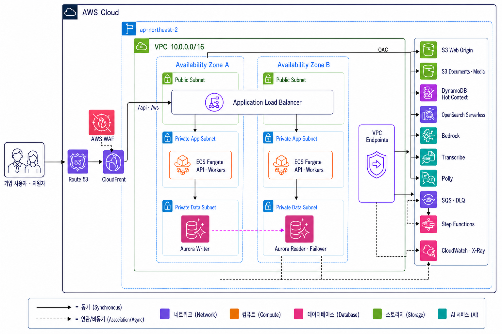
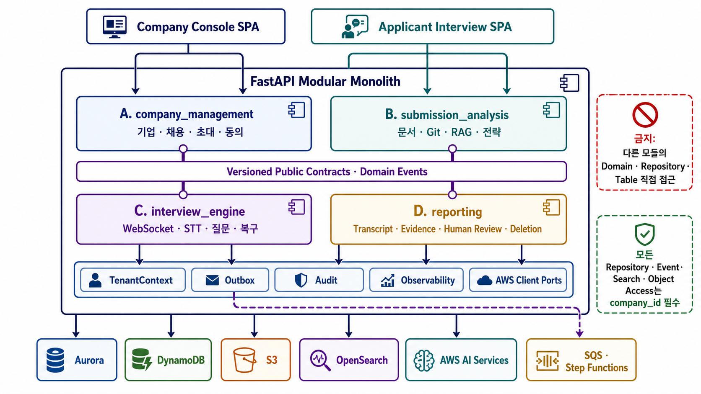
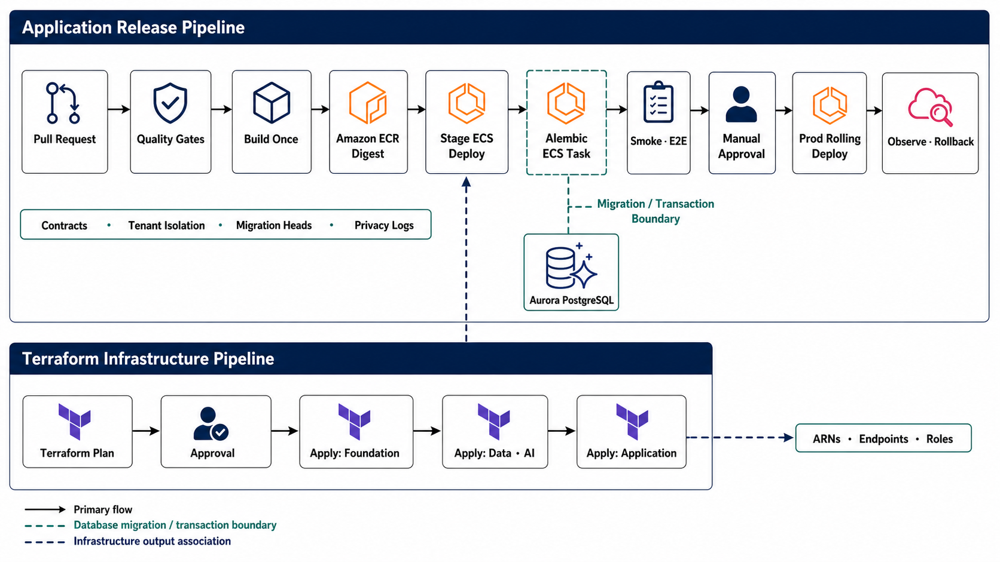

pgvector + tsvector 하이브리드 검색)을 본문에 반영했습니다.
13절에 AWS 리소스별 사용 타당성과 기각 대안(EC2 단독·EC2 리버스 프록시·EKS·OpenSearch/전용 벡터DB)을
추가했습니다. 배치도는 AWS 배포 구성도와
AI/RAG 흐름도, 전환 운영 절차는
002 quickstart가 권위입니다.
Contents
본 문서는 구현된 시스템의 아키텍처 기준선입니다. 001에서 동결한 계약·경계·상태 정의를
권위로 유지하면서, 002 검색 전환처럼 이미 코드와 Terraform에 반영된 결정을 함께 기술합니다.
본문의 인프라 서술은 infra/modules/와 infra/environments/가 실제 권위이며,
infra/tests/test_terraform_contracts.py가 문서와 코드의 이탈을 자동으로 차단합니다.
계약 변경은 여전히 영향 레인 검토와 별도 통합 커밋을 요구합니다.
제품 정체성, 범위 경계, 그리고 이 문서가 상위 문서와 맺는 관계
기업이 평가 기준을 설계하면 AI 면접관이 지원자의 이력서·포트폴리오·공개 코드 저장소를 이해한 뒤 실시간 화상 면접을 진행하고, 모든 평가에 어느 답변의 어느 구간이 근거인지를 연결해 기업의 사람에게 넘깁니다.
이 플랫폼은 AI가 사람을 대신해 합격과 불합격을 결정하는 서비스가 아니다. 기업이 최종 판단에 필요한 증거를 빠르게 확인하도록 만드는 AI 기반 사전 면접 및 채용 검토 플랫폼이다. 기획서 1.3 핵심 명제
이 한 문장이 아키텍처 전체를 지배합니다. 뒤에 나오는 모듈 경계(4절), 공개 인터페이스(5절), Evidence 정합 규칙(9절)은 모두 이 명제를 코드 구조로 강제하기 위한 장치입니다. Lane C(실시간 면접)의 공개 인터페이스 목록에 Evidence 생성 함수가 존재하지 않는 것이 그 예입니다.
이 문서는 독립적인 설계 제안이 아니라 상위 결정의 번역입니다. 위계를 알아야 각 선택의 근거를 찾을 수 있습니다.
이 문서는 정경 산출물의 공백을 임의의 기술 선택으로 채우지 않습니다. 아래 세 상태를 구분해 읽습니다.
| 상태 | 의미 | 이 문서의 적용 |
|---|---|---|
| 확정 설계 | Constitution·FR·계약·데이터 모델·research decision·task가 강제하는 경계 | 기업 기준 버전 고정, 지원자 자료 청킹·검색, 동적 질문 입력, 결정적 질문 정책, 실제 답변 Evidence |
| 버전드 설정 | 회귀·부하 테스트로 선택하며 모델·설정 버전과 함께 기록 | chunk size, retrieval weights, 최근 Turn·토큰 예산, timeout, 미디어 청크 길이, AWS capacity |
| 비요구·신규 결정 | 정경 문서가 요구하지 않아 추가하려면 ADR·계약 변경 검토가 필요한 설계 | 기업 평가기준 Vector DB화, RRF·별도 reranker, AI 최종 채용 결정, 비언어 역량 추론 |
Position·CompetencyModelVersion·EvaluationCriterion은 Aurora의 구조화된 권위 데이터이며
버전 ID로 직접 읽습니다. 임베딩 대상은 지원자 제출 자료·코드와 필요한 대화 파생뷰이고,
저장 위치는 같은 Aurora 클러스터의 retrieval_documents 테이블입니다(002 · R-003).
검색 유사도가 기업의 고정 평가축을 선택하거나 변경하지 않습니다.
기준 문항 자체를 벡터 검색으로 고르는 설계는 여전히 금지입니다.
| 구분 | 1차 범위 | 제외 |
|---|---|---|
| 직군 | IT/개발 직군 전체 | 비IT·비개발 직군 |
| 언어 | 한국어 전용 (코드·기술 용어 영문 혼용) | 다국어 면접 |
| 코드 저장소 | 인증 없이 접근 가능한 공개 저장소 | 비공개 저장소 인증 |
| 클라이언트 | 데스크톱·노트북 최신 브라우저 | 모바일 |
| 외부 연동 | 지원자 초대 이메일 | ATS · HRIS · SSO |
| 권한 | 기업 단위 테넌트 격리 | 기업 내 세밀한 역할별 권한 |
| 아바타 | 사전 제작 2D · 눈·입 움직임 | 실사형 아바타 |
PD-01이 프로덕션 수준 SaaS를 목표로 못박고, PD-02가 초기 규모를 파일럿으로 두면서 우선순위를 명시합니다.
기업 1~5개사, 동시 면접 1~5건, 누적 수백 건의 파일럿 규모. 대규모 분산 시스템보다 정확성·추적성·복구를 우선한다.
이 선언이 아키텍처의 무게를 설명합니다. 복잡도는 처리량을 위한 것이 아니라 복구 가능성과 감사 추적성을 위한 것입니다. 동시 5건이어도 면접 중 장애 복구와 평가 근거 재현은 규모와 무관하게 필요합니다. 26.1절은 이를 뒷받침하며 "고정 SLA를 먼저 강제하지 않고 STT·검색·LLM·TTS의 p50/p95를 지속 관측한다"고 규정합니다.
하위 설계 문서가 재검토할 수 없는 상위 입력
아래 26개 결정은 기획서 21절에서 확정됐고 헌장 66~84행이 이를 고정 제약으로 승격했습니다. 아키텍처가 특정 서비스를 쓰는 이유를 물을 때 최종 답은 항상 이 표에 있습니다.
| ID | 영역 | 결정 |
|---|---|---|
| PD-01 | 제품 수준 | 프로덕션 수준 SaaS · 화면 시안이나 단순 챗봇으로 축소하지 않음 |
| PD-02 | 초기 규모 | 1~5개사, 동시 5건, 누적 수백 건 · 정확성·추적성·복구 우선 |
| PD-08 | 면접 입력 | 음성 녹음 후 답변 완료 버튼으로 확정 · 자동 침묵 감지 미의존 |
| PD-09 | 재녹음 | 자발적 재녹음 불허 · 기술 장애만 별도 복구 |
| PD-10 | 아바타 | 사전 제작 2D · 발화 중 눈·입 움직임 · 사실감보다 안정성 |
| PD-11 | 기록 | 영상·음성 전체 녹화 · 자막·질문·답변 시점 연결 |
| PD-12 | 자료 범위 | 이력서·자기소개서·PDF·공개 Git 저장소 |
| PD-16 | 사람의 통제 | AI는 합불을 결정하지 않음 · 최종 상태는 사람의 명시적 행동만 |
| PD-17 | 공정성 | 표정·시선·억양만으로 역량 추론 금지 · 관찰과 평가 입력 분리 |
| PD-20 | 언어 | UI·면접·리포트 한국어 전용 |
| ID | 영역 | 결정 |
|---|---|---|
| PD-03 | 클라우드 | AWS 관리형 서비스 · 기본 리전 서울 · 배포 전 서비스·모델 가용성 확인 |
| PD-04 | 애플리케이션 | React 18+ / TS / Vite · Python 3.12+ / FastAPI / SQLAlchemy / Pydantic · SPA 2개 분리 |
| PD-05 | 아키텍처 | ECS Fargate 모듈러 모놀리스 · 장기 작업은 SQS·Step Functions·ECS 워커 |
| PD-06 | AI 서비스 | Bedrock Claude · Titan Text Embeddings V2 · Transcribe Streaming · Polly + viseme |
| PD-07 | 실행 환경 | 개발은 Docker Compose · 운영은 CloudFront·S3·ALB·ECS Fargate |
| PD-13 | 인증 | 기업은 Cognito 이메일·비밀번호 · 지원자는 만료 토큰 링크 + 본인 확인 |
| PD-14 | 테넌트 | 기업 단위 격리 · Aurora 조회·검색 조건·DynamoDB 파티션·S3 경로·워커에 기업 식별자 강제 |
| PD-15 | 개인정보 | 기업별 보관 기간 기본 6개월 · 요약·색인·임베딩도 삭제 대상 |
| PD-21 | 관계형 DB | Aurora PostgreSQL Serverless v2 기준 DB · 관계·버전·Evidence 무결성 |
| PD-22 | RAG·검색 | 문서는 Vector, GitHub는 Hybrid ·
구현 백엔드는 002에서 Aurora pgvector + PostgreSQL tsvector로 확정
(기존 Bedrock KB + OpenSearch Serverless 대체 · 13.4절) |
| PD-23 | 파일·미디어 | S3 원본 · MediaConvert 후처리 · 타임라인 메타데이터만 Aurora |
| PD-24 | 인증·알림 | Cognito User Pools · SES · 지원자는 Cognito 계정 없음 |
| PD-25 | 운영·보안 | CloudWatch · X-Ray · KMS · Secrets Manager · WAF · CloudTrail |
| PD-26 | 인프라 코드 | Terraform HCL · 환경별 S3 Remote State 분리 · 앱 배포·마이그레이션·색인과 분리 |
"기본 리전은 서울로 두고 서비스·모델 가용성을 배포 전에 확인한다"는 조건부 결정입니다.
Bedrock Claude, Titan V2, Transcribe 한국어, Polly 한국어 viseme의
ap-northeast-2 가용성 확인이 여전히 남아 있습니다.
특히 viseme Speech Marks는 PD-10의 2D 아바타 입 모양이 전적으로 의존하는 기능입니다.
미가용 시 교차 리전 추론이 필요하고, 그러면 개인정보 국외 이전 승인이 일정에 추가됩니다.
Bedrock Knowledge Base 가용성은 더 이상 차단 요소가 아닙니다 —
002에서 KB를 사용하지 않는 구조로 전환했기 때문입니다(13.4절).
PD 결정은 하위 문서가 재검토할 수 없습니다. 002의 검색 백엔드 변경은
정식 개정 경로를 따랐습니다 —
specs/002-criterion-grounded-rag/research.md R-003이 "파일럿 규모가 Aurora에 들어가고
트랜잭션 삭제·테넌트 강제가 같은 커밋에서 보장된다"는 근거로 결정을 기록하고,
R-008이 SearchIndex 인터페이스 뒤에서 Aurora 구현을 추가한 뒤
회귀 비교 후 OpenSearch 인프라를 제거하는 단계적 절차를 규정했습니다.
PD-22가 고정한 것은 "문서는 Vector, 코드는 Hybrid"라는 검색 성질이며 그 성질은 유지됩니다.
변경된 것은 그 성질을 구현하는 관리형 서비스입니다.
헌장은 PD 결정을 릴리즈 차단 조건으로 승격합니다. 위반은 "나중에 고칠 기술 부채"가 아니라 머지 거부 사유입니다.
| # | 원칙 | 강제 방식 |
|---|---|---|
| I | Evidence 우선 · 사람 최종 통제 | 모든 AI 평가는 실제 답변·자막 구간·영상 구간·기준 버전·생성 버전으로 추적.
confirmed/partially_confirmed는 유효 Evidence 필수.
AI 코드·역할·워크플로가 최종 채용 결정을 설정할 수 없음 |
| II | 테넌트 격리 · 구조적 개인정보 보호 | 모든 repository·검색·객체 키·비동기 메시지·워커 작업이 company_id 보유·강제.
분석·녹화·평가 전 유효 동의 필수. 삭제는 Aurora·DynamoDB·S3·검색 행·요약·임베딩 전부 + 검증 manifest |
| III | 계약 우선 모듈 소유권 | 4개 도메인 경계 유지. 크로스모듈은 버전드 공개 계약·이벤트만. 타 모듈 테이블·내부·private 타입 import 금지. 공유 계약은 의존 구현 착수 전 승인·머지 |
| IV | 테스트 우선 추적성 | 도메인 규칙·계약·테넌트·상태 전이·Evidence·복구 테스트를 구현 전 또는 함께 작성하고 실패 상태를 먼저 관찰. QG-01~16이 자동 테스트로 표현. 단위 테스트만으로 완료 선언 불가 |
| V | 복구 가능·멱등 면접 상태 | 상태는 서버 권위·명시적 버전·허용된 전이만. 답변 확정·Turn 생성·체크포인트·미디어 청크·워커·이벤트 소비 모두 멱등. Aurora는 Evidence 권위, DynamoDB는 outbox 동기화 복구 가능 뷰 |
research.md는 PD 결정을 구현 선택으로 변환하며 각 항목에 기각된 대안을
기록합니다. 핵심 항목만 발췌합니다.
| ID | 결정 | 기각된 대안과 이유 |
|---|---|---|
| R-001 | 모노레포 + 모듈러 모놀리스 | 4개 마이크로서비스 — 분산 트랜잭션·배포 조율·운영 부담이 시기상조 / 구조 없는 단일 패키지 — 병렬 기여자에게 강제 가능한 경계 없음 |
| R-002 | 4개 도메인 소유 레인 | 프론트·백·인프라·QA 분할 — 모든 기능이 핸드오프와 공유 파일 편집 유발 / 화면별 분할 — 도메인 규칙·데이터·워커 소유자 불분명 |
| R-005 | Outbox 기반 도메인 이벤트 | 커밋 후 best-effort 발행 — 프로세스 크래시로 이벤트 유실 / 분산 트랜잭션 — 선택된 AWS 서비스에 실용적 코디네이터 없음 |
| R-008 | 서버 권위 면접 상태 | 브라우저 저장소 복원 — 신뢰 불가·불완전 / API 메모리 보관 — Fargate 태스크 교체 시 소실 |
| R-009 | 명시적 답변 완료 | 자동 발화 종료 단독 — 휴지와 한국어 발화 패턴이 답변을 조기 종료 / 무제한 재녹음 — 의도된 면접 조건 변경 |
| R-010 | 애플리케이션 정책 우선 | 프롬프트만으로 강제 — 출력이 여전히 제약 위반 가능 / 관리형 guardrail 단독 — 제품 고유 불변식 미포함 |
| R-011 | 코드 하이브리드 검색 | 저장소 전체 임베딩 — 기여 범위·정확한 출처 상실 / 벡터 단독 — 심볼·경로 정확 일치 중요 / 커밋 메시지·해시 질문 — 암기 테스트, 구현 이해도 아님 |
| R-013 | 직접 청크 미디어 업로드 | 면접 종료 시 단일 파일 — 연결 끊김에 전체 녹화 소실 / API 프록시 — 불필요한 대역폭·메모리 압박 |
| R-015 | Terraform과 앱 배포 소유자 분리 | Terraform provisioner로 빌드·마이그레이션·색인 — 선언적 인프라가 아님 / 양쪽이 같은 Task Definition 필드 갱신 — 서로 되돌림 |
요청 경로, 배포 단위, 기술 계층
배포는 단일 API 이미지이고 소스 소유권만 4개 서브트리로 분리됩니다. 마이크로서비스가 아니라 모듈러 모놀리스입니다.

Aurora PostgreSQL은 Evidence와 영속 상태의 권위 저장소입니다. DynamoDB의 Hot Context와
검색 파생 테이블(retrieval_documents)은 동일한 ID·버전·테넌트 범위로 재구축 가능한 파생 뷰이며,
S3는 문서·미디어·스냅샷 객체를 보관합니다.
같은 클러스터에 있어도 권위 등급은 다릅니다 —
파생 테이블은 원본과 content_hash·embedding_version으로 재생성 가능하고,
복구 시 재구축 대상이지 복원 기준이 아닙니다.
| 계층 | 기술 | 사용 목적 |
|---|---|---|
| 프론트엔드 | React 18+, TypeScript, Vite, TanStack Query, Zustand | 기업 콘솔·면접룸 · 서버 상태와 면접 로컬 상태 분리 |
| 브라우저 미디어 | MediaDevices, MediaRecorder, Web Audio API | 장비 점검, 영상 조각 녹화, 음성 스트리밍 |
| 백엔드 | Python 3.12+, FastAPI, Pydantic, SQLAlchemy 2, Alembic | REST, WebSocket, 도메인 규칙, DB 접근·마이그레이션 |
| 실시간 채널 | FastAPI WebSocket + ALB (CloudFront /v1/* 경유) | 질문 상태·텍스트·TTS 결과·복구 이벤트 전달 |
| 검색 | Aurora PostgreSQL pgvector + tsvector · Bedrock Titan V2 임베딩 | 테넌트 우선 필터 후 벡터·렉시컬·심볼 exact 하이브리드 랭킹 |
| 백그라운드 | SQS, Step Functions, ECS Fargate 워커 | 분석·색인·리포트·삭제·영상 후처리 · Lambda 미사용(13.3절) |
| 인프라 코드 | Terraform HCL, AWS Provider ~> 5.80 | 네트워크·컴퓨팅·데이터·AI 안전장치·보안 리소스 재현 |
| 컨테이너 | Docker, ECR, ECS Fargate | API와 워커 이미지의 동일 실행 환경 |
apps/
├─ company-console/src/
│ ├─ app/ ← 통합 소유 (셸·라우트 레지스트리)
│ └─ features/{company, hiring, review}
└─ applicant-interview/src/
├─ app/ ← 통합 소유
└─ features/{access, submissions, interview}
packages/
├─ contracts/
│ ├─ openapi/root.yaml ← 통합 소유
│ ├─ openapi/paths/{company,submission,interview,reporting}/
│ ├─ events/{common,submission,interview,reporting}/
│ └─ generated/{python,typescript}/
└─ test-fixtures/
backend/src/interview_evidence/
├─ main.py ← 통합 소유 (합성 루트)
├─ company_management/ ← Lane A
├─ submission_analysis/ ← Lane B
├─ interview_engine/ ← Lane C
├─ reporting/ ← Lane D
├─ workers/{analysis, interview, reporting}/
└─ shared/ ← 통합 소유 (기술 프리미티브)
backend/alembic/versions/{company,submission,interview,reporting,merge}/
infra/
├─ bootstrap/{state-backend, pipeline-role}/
├─ modules/{network,edge,compute,data,async-workflow,ai-search,identity,observability}/
└─ environments/dev/{foundation,data-ai,application}/ · environments/prod/
tests/{e2e, fixtures/shared, regression, load}/
모노레포를 쓰는 이유는 생성 계약·공유 픽스처·통합 파이프라인이 원자적으로 유지되면서 도메인 구현은 배타적 서브트리에 머물게 하기 위함입니다. 배포는 하나의 모듈러 모놀리스 API이므로 소스 소유권 분리가 서비스 분리로 번지지 않습니다.
| 구분 | 대상 |
|---|---|
| 동기 호출 | 사용자 대면 조회와 즉시 응답이 필요한 커맨드에 한정 |
| 비동기 이벤트 | 장기 작업과 크로스 스토어 동기화 · 버전드·멱등 이벤트 사용 |
| Outbox 경유 | 내구성이 필요한 크로스모듈 상태 전이 |
배타적 경로, 단방향 의존, CI 강제 금지 규칙
아키텍처가 4갈래인 이유는 기여자가 4명이기 때문입니다. 조직 구조가 아키텍처를 오염시키기 전에, 아키텍처로 조직 구조를 먼저 정의합니다.

| 레인 | 도메인 책임 | 배타적 구현 경로 |
|---|---|---|
| Lane A 플랫폼·채용 |
저장소 부트스트랩, 기업 인증, 테넌트 컨텍스트, 포지션, 기준, 캠페인, 초대, 동의 셸, 공유 AWS·Terraform 기반 | apps/company-console/src/features/{company,hiring}/ apps/applicant-interview/src/features/access/ backend/src/interview_evidence/company_management/ backend/alembic/versions/company/ infra/ |
| Lane B 제출·RAG |
업로드 워크플로, 문서·Git 분석, 청킹, 하이브리드 검색, 전략 생성, 분석 워커 | apps/applicant-interview/src/features/submissions/ backend/src/interview_evidence/submission_analysis/ backend/src/interview_evidence/workers/analysis/ backend/alembic/versions/submission/ |
| Lane C 실시간 면접 |
면접룸 셸, 장비·미디어, 세션 상태, STT-검색-LLM-TTS 오케스트레이션, 체크포인트·복구 | apps/applicant-interview/src/features/interview/ backend/src/interview_evidence/interview_engine/ backend/src/interview_evidence/workers/interview/ backend/alembic/versions/interview/ |
| Lane D Evidence·검토 |
자막·타임라인, 미디어 후처리, 리포트, Evidence, 사람 검토, 보관·삭제 오케스트레이션 | apps/company-console/src/features/review/ backend/src/interview_evidence/reporting/ backend/src/interview_evidence/workers/reporting/ backend/alembic/versions/reporting/ |
foundation 커밋 이후 아래 경로의 유일한 기록자는 통합 담당자입니다. 레인 기여자는 계약 변경을 작은 패치나 이슈로 제안하고, 영향 레인 검토 후 통합 담당자가 적용합니다.
package.json, 락파일, pyproject.toml, compose.yaml, Makefileapps/*/src/app/, backend/src/interview_evidence/main.pybackend/src/interview_evidence/shared/packages/contracts/tests/e2e/, tests/fixtures/shared/backend/alembic.ini, alembic/env.py, versions/merge/HTTP/WebSocket 라우터
→ 자기 application service
→ 자기 domain
→ 자기 repository / adapter
│
└─→ 선언된 module interface 또는 domain event
api.py, contracts.py, 선언된 도메인 이벤트만 노출한다.TenantContext를 받는다. 부재는 타입 에러이자 런타임 에러다.shared 적재소에 두지 않는다.domain/, repositories/, models/, internal/ importCI는 import 경계 룰셋과 repository 쿼리 감사를 유지해야 합니다
(scripts/check_module_boundaries.py). 이 검사기의 품질이 아키텍처 강제력을 결정합니다.
| 웨이브 | 내용 | 산출·게이트 |
|---|---|---|
| Wave 0 공유 기반 |
모노레포, 계약, 생성 타입, fake, 테스트 하네스, 마이그레이션 레이아웃, CI | 4명 전원 검토 후 foundation-v1 태그. 모든 레인이 동일 커밋에서 분기 |
| Wave 1 4개 병렬 thin slice |
A: 기업→기준 버전→캠페인→초대→동의 / B: 제출 픽스처→분석 상태→검색 가능 소스→전략 / C: 시드 전략→시작→답변 1개→다음 질문→재접속→완료 / D: 완료 세션 픽스처→자막→Evidence 리포트→사람 검토→삭제 manifest | 크로스 레인 fake 사용 · 각 레인의 계약·테넌트·실패·관측 테스트 통과 |
| Wave 2 계약 통합 |
머지 순서 A → B → C → D (후속 레인이 선행 도메인 식별자를 소비) | 각 머지 후 ① 계약 생성·드리프트 확인 ② 이전 레인 테스트 전체 ③ Alembic head 머지 ④ fake를 실제 프로듀서로 정확히 하나씩 교체 ⑤ 크로스모듈 시나리오 |
| Wave 3 하드닝 |
실패 모드, 개인정보 삭제, 검색 품질, 관측, 접근성, 부하 | 전체 quickstart + QG-01~16 + $speckit-converge 정합 확인 |
태스크 실측: Integration 53 · Lane A 40 · Lane C 40 · Lane B 32 · Lane D 32.
Wave 0 담당자가 Lane A도 소유하면(infra/ 전체 포함) 시작 지점에 병목이 생기고
나머지 3명이 21개 foundation 태스크를 대기합니다. Wave 0 분담 검토가 필요합니다.
허용된 크로스도메인 호출의 전체 목록 · Module Boundary Contract v1.0.0
TenantContext {
company_id : UUID
actor_type : company_user | applicant | system
actor_id : UUID
request_id : UUID
trace_id : string
}
EntityRef {
company_id : UUID
entity_type : string
entity_id : UUID
version? : integer
}
CommandMeta {
idempotency_key : string
expected_version? : integer
occurred_at : timestamp
}
모든 공개 호출은 TenantContext를 첫 인자로 받습니다.
구현체는 데이터를 반환하거나 사이드이펙트를 수행하기 전에
참조된 모든 엔티티가 해당 컨텍스트에 속하는지 검증해야 합니다.
| 인터페이스 | 입력 | 출력 | 컨슈머 |
|---|---|---|---|
| get_campaign_snapshot | 캠페인 ID | 포지션, 게시된 기준 버전, 금지 주제, 소요 시간, 페르소나 | B, C, D |
| get_criterion_version | 버전 ID | 불변 기준과 관찰 규칙 | B, C, D |
| authorize_invitation | 초대 ID, 필요 상태 | 지원자, 캠페인, 만료, 인가 결과 | B, C, D |
| get_consent_authorization | 초대 ID, 필요 목적 | 정책 버전, 목적, 수락·철회 상태, 보관 스냅샷 | B, C, D |
| advance_invitation_state | 초대 ID, from/to, CommandMeta | 새 상태와 row 버전 | B, C, D |
| append_audit_event | 불투명 리소스·행위·결과 메타데이터 | 감사 이벤트 ID | A, B, C, D |
Lane A는 CompanyUser 자격증명, 초대 raw token, 가변 criterion 내부를 노출하지 않습니다.
| 인터페이스 | 입력 | 출력 | 컨슈머 |
|---|---|---|---|
| get_analysis_status | 초대 ID | 제출별 상태, 영향, 전략 준비도 | A, C |
| get_strategy_snapshot | 전략 ID | 불변 전략, 기준 버전, 시간 예산, 소스 후보 | C |
| retrieve_context | 지원자·세션 범위, 질의, 기준 ID, 설정 버전 | 순위화된 source ref와 점수 | C |
| resolve_source_reference | 청크·코드유닛 ID와 저장 locator | 불변 소스 위치와 소유 신뢰도 | C, D |
| enumerate_submission_deletion_targets | 초대·지원자 ID | 소유한 durable·객체·검색 타겟 ref | D |
| delete_submission_target | 삭제 타겟, CommandMeta | 삭제 영수증과 검증 상태 | D |
Lane B는 이벤트로 원본 지원자 텍스트를 노출하지 않습니다. 컨슈머는 인가된 요청 내부에서만 스코프된 내용을 조회하고 로그에 넣지 않습니다.
| 인터페이스 | 입력 | 출력 | 컨슈머 |
|---|---|---|---|
| get_session_snapshot | 세션 ID | 상태, 시퀀스, 전략·버전 ref, 마지막 확정 Turn, 저하 모드 | A, D |
| get_final_turn | 세션 ID, turn ID | 불변 질문·답변 Turn | D |
| list_final_turns | 세션 ID, cursor | 순서 있는 불변 Turn | D |
| resolve_recording_chunks | 세션 ID | 검증된 객체 ref와 세션 시계 구간 | D |
| enumerate_interview_deletion_targets | 세션·지원자 ID | 세션·Turn·체크포인트·hot view·청크 타겟 | D |
| delete_interview_target | 삭제 타겟, CommandMeta | 삭제 영수증과 검증 상태 | D |
Lane C는 ReportItem, Evidence, HumanReview, 최종 채용 결정을 생성하지 않습니다. 이 함수들이 export 목록에 존재하지 않으므로, 실시간 면접 엔진이 실수로 평가나 결정을 만드는 것이 타입 레벨에서 불가능합니다.
| 인터페이스 | 입력 | 출력 | 컨슈머 |
|---|---|---|---|
| get_review_projection | 초대·세션 ID | 리포트 준비도, 요약 상태, 사람 결정 상태 | A |
| get_report | 리포트 ID·버전 | 리포트, 항목, Evidence ref, 사람 override | A |
| request_deletion | 지원자·초대 범위, 사유, 요청자 | 삭제 요청과 manifest 상태 | A |
| get_deletion_status | 삭제 요청 ID | 스토어별 타겟과 검증 상태 | A |
Lane D는 캠페인, 기준, 초대, 전략, 세션, Turn을 변경하지 않습니다.
| 레인 | 엔드포인트 |
|---|---|
| A | GET /me · /positions · /positions/{id}/competency-model-versions · POST /competency-model-versions/{id}/publish · /campaigns · /campaigns/{id}/publish · /campaigns/{id}/invitations · /applicant/access/exchange · /applicant/identity-verifications · /applicant/consents |
| B | POST /applicant/submissions/upload-intents · /applicant/submissions · GET /applicant/analysis-status |
| C | POST /applicant/equipment-checks · /applicant/interview-sessions · /applicant/interview-sessions/{id}/resume · /applicant/interview-sessions/{id}/media-upload-intents |
| D | GET /interview-sessions/{id}/report · /interview-sessions/{id}/timeline · /interview-sessions/{id}/review-artifacts · POST /reports/{id}/items/{id}/reviews · /invitations/{id}/final-decisions · /privacy/deletion-requests · GET /privacy/deletion-requests/{id} |
| 변경 유형 | 요구 절차 |
|---|---|
| 추가 optional 응답 필드 | 동일 major 내 하위 호환 · 절차 없음 |
| 새 enum 값 | 컨슈머가 unknown 또는 safe-default 분기를 먼저 지원한 뒤 발행 |
| 필수 필드 추가 · 필드·값 제거 · 의미 변경 · 메서드 개명 | 새 major 계약 버전 · 영향 레인 승인 · fake 갱신 · 별도 통합 커밋 |
| 버전 폐기 | 모든 컨슈머 마이그레이션 완료 + 해당 버전 replayable 이벤트의 보존 기간 경과까지 유지 |
컨슈머는 지원 버전 범위를 선언하고, startup과 워커 등록 시 비호환이면 fail fast합니다.
TenantContextopenapi.yaml의 REST 경로명과 요청·응답 스키마명websocket.md의 봉투·시퀀스·멱등성 규칙async-events.md의 비동기 봉투·토픽명·버전 규칙data-model.md의 엔티티 소유권·FK 방향·상태 enumAurora 권위와 재구축 가능한 파생 스토어
Aurora 레코드는 이 문서가 명시적으로 파생 뷰라고 라벨한 경우를 제외하고 durable truth입니다.
모든 테넌트 소유 row는 company_id를 포함합니다.
| 스토어 | 성격 | 역할 |
|---|---|---|
| Aurora PostgreSQL Serverless v2 | 권위 | 식별자, 버전, 상태, Turn, 자막 앵커, SourceReference, Evidence, 사람 검토, 감사, 삭제 상태 |
| DynamoDB | 파생 | Hot 대화 문맥과 복구 체크포인트. Aurora + 자막 객체에서 재구축 가능. 장기 보관의 유일한 기준 저장소로 사용하지 않음 |
| S3 | 불변 객체 | 원본 문서, 코드 스냅샷, 영상·음성·자막 파일, 리포트 산출물 |
Aurora retrieval_documentspgvector + tsvector | 파생 | 벡터·렉시컬·심볼 exact 하이브리드 검색. 재구축 가능한 색인이며 캐스케이딩 권위가 아님. 권위 테이블과 같은 클러스터에 있으므로 삭제·테넌트 강제가 같은 트랜잭션에서 성립 |
별도 검색 클러스터는 두 개의 진실을 만듭니다. 지원자 삭제가 Aurora에서 커밋된 뒤
외부 색인 삭제가 실패하면, 헌장 원칙 II가 요구하는 "스토어별 부재 검증"이 비동기 재시도에 의존하게 됩니다.
retrieval_documents를 같은 클러스터에 두면 원본 row 삭제와 검색 row 삭제가
하나의 트랜잭션이고, 실패 시 둘 다 롤백됩니다.
검색 쿼리도 company_id·applicant_id·deleted_at IS NULL을
스코어링 전에 WHERE로 강제하므로 테넌트 누출 경로가 애초에 생기지 않습니다
(submission_analysis/adapters/postgres_hybrid.py).
| 관심사 | 규약 |
|---|---|
| 식별자 | 애플리케이션이 생성하는 UUIDv7 호환 문자열 · PII에서 파생 금지 |
| 시간 | 타임존 포함 UTC · 브라우저 시간은 권위가 아님 |
| 테넌트 | company_id는 모든 테넌트 소유 PK·유니크 인덱스와 repository 호출에 필수 |
| 버전 | 불변 양의 정수 + 소스 ID · 사용된 레코드는 제자리 수정하지 않음 |
| 낙관적 동시성 | 가변 애그리게이트 변경 시 row_version 증가 |
| 소프트 상태 | 명시적 상태 enum과 전이 시각 · 소프트 삭제는 개인정보 삭제를 충족하지 않음 |
| 텍스트 보안 | 지원자 원문과 답변 텍스트는 운영 로그 프로젝션에서 제외 |
| 객체 식별 | 객체 키, 콘텐츠 해시, 바이트 크기, 미디어 타입, 암호화 메타데이터 저장 |
| AI 출처 | 모델 ID, 프롬프트·설정 버전, 스키마 버전, 생성 시각 저장 |
| 멱등성 | 커맨드와 작업은 idempotency_key를 유니크 스코프 제약과 함께 저장 |
| 애그리게이트 · 엔티티 | 소유 | 타 레인 저장 허용 범위 |
|---|---|---|
| Company, CompanyUser, Position, CompetencyModelVersion, EvaluationCriterion | A | 안정 ID와 불변 버전만 |
| Campaign, Invitation, ConsentRecord, ApplicantProfile | A | 안정 ID, 상태 프로젝션, 동의 인가 결과 |
| Submission, SubmissionAnalysis, SubmissionChunk | B | 안정 ID, 분석 상태, source locator |
| GitRepositoryAnalysis, GitCommitAnalysis, CandidateCodeUnit | B | 안정 ID와 source locator |
| InterviewStrategy | B | 안정 ID, 기준 버전, 전략 버전 |
| InterviewSession, Turn, SessionCheckpoint | C | 안정 ID, 상태, 시퀀스, 완료 프로젝션 |
| RecordingChunk 업로드 상태 | C | 안정 미디어 locator와 세션 시계 구간 |
| TranscriptSegment, RecordingAsset, SessionEvent | D | Lane C는 provisional 자막·미디어 이벤트 발행 가능 |
| Report, ReportItem, Evidence, HumanReview | D | 안정 ID와 준비도·상태 프로젝션 |
| RetentionPolicy | A | Lane D는 불변 정책 스냅샷을 소비 |
| DeletionRequest, DeletionManifest, DeletionTarget | D | 타겟 레인은 자기 타겟 영수증·결과만 갱신 |
| AuditEvent | A | 각 레인은 공개 감사 인터페이스로 append |
| OutboxEvent, ProcessedMessage | 통합 | 각 레인은 shared 인터페이스로 기록 |
PK : SESSION#{interview_session_id}
SK : META
CHECKPOINT#{zero_padded_sequence}
TURN#{zero_padded_sequence}
SUMMARY#{start_sequence}#{end_sequence}
모든 아이템은 company_id, durable turn_id 또는 체크포인트 ID,
스키마 버전, 마지막 정합된 outbox 이벤트, TTL을 포함합니다.
시퀀스는 zero-pad로 정렬을 보장합니다.
Hot 문맥 범위는 하드코딩하지 않고 버전드 설정으로 관리합니다 —
max_recent_turns, max_recent_tokens,
summary_trigger_tokens, hot_context_ttl.
companies/{company_id}/invitations/{invitation_id}/
submissions/{submission_id}/original/{opaque_object_id}
submissions/{submission_id}/derived/{analysis_version}/{opaque_object_id}
submissions/{submission_id}/github/{repository_id}/snapshot/{commit_sha}/{opaque_object_id}
submissions/{submission_id}/github/{repository_id}/commits/{commit_sha}/{opaque_object_id}
sessions/{session_id}/recording/chunks/{zero_padded_sequence}
sessions/{session_id}/recording/final/{asset_version}/{opaque_object_id}
sessions/{session_id}/audio/{opaque_object_id}
sessions/{session_id}/transcript/{asset_version}/{opaque_object_id}
sessions/{session_id}/reports/{report_version}/{opaque_object_id}
이름과 이메일은 키에 절대 등장하지 않습니다. 모든 식별자는 불투명 ID입니다. 모든 키는 현재 테넌트 컨텍스트의 기업·초대·세션에 대해 인가됩니다. 객체 키 직접 조립은 소유 모듈 외부에서 금지됩니다(4절 금지 규칙).
| 자료 | 기준 저장소 | 검색 전략 |
|---|---|---|
| 자기소개서·이력서 | 텍스트는 Aurora, 원본은 S3 | Titan V2 임베딩 + pgvector Vector RAG · 서술형 경험 구간만 |
| 포트폴리오·기술문서 | S3 | Titan V2 임베딩 + pgvector Vector RAG |
| 공개 GitHub 코드 | 워커 임시 저장소 · 스냅샷·diff·산출물은 S3 | 커밋별 변경 청크와 코드 유닛을 벡터 + tsvector 렉시컬 + 심볼·경로 exact로 색인 |
| 최근 질문·답변 | DynamoDB | Aurora에 최소 영구 Turn 앵커 |
| 오래된 대화 | Aurora / S3 자막 원본 | 요약 + retrieval_documents 대화 파생뷰 |
| 자막 | Aurora 세그먼트 + S3 전체 파일 | tsvector 키워드 검색 · 영상 타임스탬프 연결 |
| 질문의 자료 출처 | Aurora SourceReference | retrieval_document_id·locator 연결 |
| 평가 Evidence | Aurora 전용 | 없음 · 평가 항목·답변 Turn·영상 시점의 관계를 강제 |
분석의 기본 단위는 저장소 전체가 아니라 지원자의 각 커밋과 그 커밋이 변경한 코드 단위입니다.
CommitChangeChunkCandidateCodeUnit으로 확장 — 커밋 당시 전체 구현, 현재 스냅샷, 변경 영역, 직접 호출하는 코드·모델·인터페이스, 관련 테스트retrieval_documents에 적재primary_owned / shared / context_only / unrelated로 분류하고 ownership_confidence 계산vector_score + lexical_score + symbol_exact_score + 메타데이터 보정 (설정 가능 가중치)현재 구현의 SQL 랭킹은 1 - cosine_distance(embedding, query)를 벡터 점수로,
ts_rank_cd(to_tsvector('simple', search_text), websearch_to_tsquery('simple', query))를
렉시컬 점수로, 소문자 심볼 일치를 exact 점수로 두고
vector×0.55 + lexical×0.30 + exact×0.80으로 정렬해 LIMIT 200을
가져온 뒤 애플리케이션에서 ownership_confidence×0.15를 더해 상위 5건으로 재랭킹합니다.
가중치와 token_budget은 12절의 버전드 설정이며 코드 상수가 아닙니다.
tsvector 설정이 'simple'이므로 한국어 형태소 분석이 없습니다.
공백 단위 토큰화만 수행되어 조사가 붙은 한국어 표현의 렉시컬 재현율이 낮습니다.
현재는 벡터 점수(0.55)가 한국어 서술 자료의 주 신호이고, 렉시컬 점수는
영문 기술 용어·심볼·경로에서 실효를 냅니다.
개선 경로는 형태소 사전 확장이나 별도 분석기 도입이며 회귀 비교 후 결정합니다.
커밋 메시지나 SHA 자체를 묻는 질문은 생성하지 않습니다. 커밋은 지원자 작성 코드의 범위와 출처를
확인하는 선택자이고, 질문은 코드의 동작 원리, 설계 의도, 예외 처리, 데이터 정합성, 성능, 보안,
테스트와 개선 방향을 대상으로 합니다. 심볼 이름이 같다는 이유만으로 지원자의 주장과 관련 있다고 단정하지 않으며,
ownership_confidence가 낮으면 단독 구현으로 단정하지 않습니다.
고정 평가축과 검색 자료는 서로 다른 경로를 사용합니다. 기업 기준은 Aurora에서 정확한 버전을 직접 읽고, 지원자가 제출한 자료만 재구축 가능한 검색 표현으로 변환합니다.
retrieval_documents는 원본 권위가 아니며 재구축 가능
삭제원본·청크·임베딩·검색 문서 부재까지 검증
| 소스 | 청킹 단위 | 보존 locator | 의도적으로 가변 |
|---|---|---|---|
| 이력서·자기소개서 | 섹션·경험·역할·성과와 원본 위치를 보존하는 서술 단위 | 문서 ID · 페이지 · 섹션 · 원본 범위 | chunk_config_version이 크기와 분할 규칙을 소유합니다. 숫자는 회귀 테스트 전 고정하지 않습니다. |
| PDF·기술문서 | section/page/location-aware 추출 단위 | 페이지 · 섹션 · line 또는 extractor locator | |
| 공개 Git | 지원자 커밋 diff와 변경된 함수·클래스·테스트를 확장한 CandidateCodeUnit | repository · commit · path · symbol · line range · 관련 test | |
| 기업 평가기준 | 청킹·임베딩하지 않음. 불변 criterion version과 ID로 직접 읽음 | 해당 없음 | |
| 면접 대화 | 최근 Turn은 DynamoDB Hot View, 오래된 범위는 원본 Turn 앵커를 가진 요약 | session · turn range · transcript/media anchor | 최근 Turn·토큰 예산 · 요약 시작 기준 |
retrieve_context 실행 계약자료 청크와 코드 유닛은 질문을 설명하는 SourceReference입니다. 검색 점수·기업 criterion·요약만으로
평가 상태를 확인됨으로 만들 수 없습니다. Evidence는 면접 후 Lane D가 지원자의 final answer Turn과
자막·영상 구간에서만 생성합니다.
봉투 v1.0, 처리 규칙 8개, 카탈로그 14종
Aurora와 DynamoDB·큐·검색·객체 저장소는 하나의 트랜잭션으로 묶을 수 없습니다. 커밋 후 best-effort 발행은 프로세스 크래시로 이벤트를 잃고, 분산 트랜잭션은 선택된 AWS 서비스에 실용적인 코디네이터가 없습니다. Outbox는 불완전 전달을 관측 가능하고 재시도 가능하게 만들면서 Turn이나 작업을 중복 생성하지 않습니다.
{
"event_id" : "uuid",
"event_type" : "submission.analysis.requested",
"event_version" : 1,
"occurred_at" : "2026-08-14T00:00:00Z",
"company_id" : "uuid",
"aggregate" : { "type": "submission", "id": "uuid", "version": 3 },
"idempotency_key" : "stable-operation-key",
"trace_id" : "opaque-trace-id",
"correlation_id" : "uuid",
"causation_id" : "uuid-or-null",
"payload" : { }
}
이벤트는 식별자와 정제된 상태만 담습니다. 원본 문서 텍스트, 답변 텍스트, 자격증명, 토큰, signed URL은 금지입니다.
ProcessedMessage를 기록한다.| 이벤트 | 발행 | 소비 | 최소 payload |
|---|---|---|---|
| invitation.consent_completed | A | B, C | 초대·지원자·동의 레코드 ID, 목적 코드, 보관 스냅샷 |
| submission.analysis_requested | B | B 워커 | 제출 ID, 분석 버전, 소스 타입, 객체·참조 ID |
| submission.analysis_completed | B | A, C | 초대·제출·분석 ID, 상태, 영향 코드 |
| strategy.ready | B | A, C | 초대 ID, 전략 ID·버전, 기준 버전 ID, 상태 |
| interview.turn_finalized | C | D | 세션·turn ID, 시퀀스, 발화자, 자막 준비 플래그 |
| interview.session_paused | C | A, D | 세션 ID, 시퀀스, 기술 사유 코드, 재시도 가능 여부 |
| interview.completed | C | A, D | 세션·초대 ID, 마지막 Turn ID, 완료 시각, 미디어 상태 |
| media.postprocess_requested | D | D 워커 | 세션 ID, 순서 있는 청크셋 ID, 출력 프로파일 버전 |
| report.generation_requested | D | D 워커 | 세션 ID, 리포트 버전, 기준 버전 ID |
| report.ready | D | A | 세션 ID, 리포트 ID·버전, 상태, Evidence 커버리지 수 |
| deletion.requested | D | A,B,C,D | 삭제 요청·manifest ID, 지원자·초대·세션 범위 |
| deletion.target_requested | D | 소유 레인 | 삭제 요청 ID, 타겟 ID·타입·스토어, 타겟 버전 |
| deletion.target_verified | A/B/C/D | D | 삭제 요청 ID, 타겟 ID, 상태, 검증 시각 |
| retention.expired | A | D | 초대·지원자 ID, 정책 스냅샷 ID, 만료 시각 |
제품의 핵심 흐름입니다. 답변 완료는 멱등 커맨드로 처리되며, 영속 Turn을 확정한 뒤에만 다음 질문 생성으로 넘어갑니다.
답변 완료, 업로드 manifest, Idempotency-Key, expected_sequence를 전송합니다.session_sequence를 증가시킵니다.Aurora와 DynamoDB는 하나의 트랜잭션으로 묶을 수 없으므로 동일한 turn_id,
session_sequence, 멱등 키를 사용합니다. Aurora의 Outbox 이벤트로 DynamoDB 반영
실패를 복구하며, 불일치가 장시간 조용히 남지 않도록 동기화 상태를 관측합니다.
DynamoDB가 일시적으로 불가능하면 Aurora의 최근 Turn으로 문맥을 재구성하는 제한 모드를 제공합니다.
Claude 출력은 question, target_criterion_id, reason,
source_reference_ids, end_interview, uncertainty 같은
구조화 필드를 가집니다. 검증 순서는 다음과 같습니다.
Guardrails는 제품의 금지 질문 규칙을 대체하지 않습니다. 확률적 안전 계층은 유일한 강제 장치가 될 수 없다는 것이 R-010의 결론입니다.
자료가 검색되었다는 이유만으로 그 내용을 사실로 단정하지 않습니다. 질문은 확인형으로 표현하고 지원자가 설명하거나 정정할 기회를 제공합니다.
최근 대화가 설정된 Turn 수 또는 토큰 예산을 초과하면 순서대로 압축합니다.
요약은 원본 답변을 대체하는 Evidence가 아닙니다. 평가를 만들 때는 요약에서 원본 Turn과 영상 구간으로 되돌아가 실제 답변을 근거로 사용합니다.
Lane B가 자료 분석을 끝내면 기업의 고정 기준을 변경하지 않은 채 지원자별 검증 계획을 만듭니다. 이 전략은 세션 시작 시 고정되고 Lane C는 내부를 재생성하지 않고 불변 스냅샷으로 소비합니다.
| 입력 | 권위·출처 | 사용 방식과 금지 |
|---|---|---|
| 고정 InterviewStrategy | Lane B get_strategy_snapshot | criterion version, 공통 주제, 검증 포인트, follow-up 방향, 시간 예산을 고정 입력으로 사용 |
| 최근 확정 Turn | DynamoDB Hot View · Aurora anchor | 질문 중복과 직전 답변의 모호성을 판단. partial transcript는 확정 문맥으로 사용 금지 |
| 오래된 대화 요약 | 원본 Turn 범위를 가진 버전드 summary | 토큰 예산 절약용. 요약만으로 사실·Evidence 확정 금지 |
| 미확인 평가 계획 | required_evidence_plan | coverage 우선순위용 계획 메타데이터. Lane C가 Evidence나 평가 상태를 생성한다는 뜻이 아님 |
| 관련 지원자 자료 | Lane B retrieve_context | ranked SourceReference로만 전달. 지원자의 사실로 단정하지 않고 확인형 질문에 사용 |
| 남은 시간·질문 이력 | 서버 세션 시계 · final Turn history | 다음 criterion과 질문 길이 선택. 구체 임계값은 버전드 전략 설정 |
| 질문 유형 | 선택 조건 | 검색·출처 | 불변 안전 규칙 |
|---|---|---|---|
| 공통 질문 | 필수 criterion의 공통 질문이 아직 실행되지 않음 | 자료가 없어도 가능 · criterion ID 직접 사용 | 금지 주제·민감 영역·직무 무관 개인정보·중복·복수 질문·평가축 변경을 결정적으로 차단. 모든 출력은 하나의 짧은 질문이어야 함. |
| 꼬리질문 | 직전 final answer에 전략의 미확인 방향·모호성·구체성 부족이 남음 | 동일 criterion과 관련 SourceReference를 스코프 검색 | |
| 기여 확인 질문 | 코드 ownership이 shared/context_only 또는 confidence가 낮음 | commit diff · code unit · 관련 test locator 필수 | |
| 다음 criterion | 현재 follow-up 방향을 더 진행하지 않거나 남은 필수 항목·시간 우선순위가 더 높음 | 새 criterion으로 query와 source 후보를 재구성 | |
| 저하 모드 질문 | 검색 실패 또는 신뢰할 출처 없음 | 검색 자료 없이 공통 criterion 질문 · degraded mode 기록 |
criterion별 질문 수, 꼬리질문 최대 깊이, 검색 후보 수, 점수 cutoff, 시간 배분과 문맥 토큰 예산은 제품 요구사항의 상수가 아닙니다. 회귀 코퍼스·부하 테스트 결과로 선택하고 strategy/model/retrieval config version과 함께 저장해야 합니다. 현재 문서는 이 값에 임의 숫자를 부여하지 않습니다.
초대 · 면접 세션 · 분석 작업 · 삭제
만료·취소된 초대는 활성 상태로 재진입할 수 없습니다.
interrupted는 검증된 체크포인트를 통해서만 interviewing으로 복귀합니다.
수락된 모든 전이는 session_sequence를 증가시킵니다.
더 오래된 expected sequence를 가진 지연·중복 커맨드는 상태를 되돌리지 않고 현재 스냅샷만 반환합니다.
재접속 시 중복 Turn 생성을 막는 핵심 장치입니다.
partial이 핵심입니다. 자료 하나의 분석이 실패해도 나머지 자료와 공통 평가 기준으로
전략을 만들 수 있으면 준비는 부분 완료되고, 실패 대상·원인·면접 영향이 지원자와 기업에 구분되어 표시됩니다.
deletion.target_requested ↓deletion.target_verified ↑retrieval_documents · DynamoDB · S3 · 요약 · 임베딩다음 사건은 SessionEvent로 기록됩니다.
기술 장애 구간은 평가 입력에서 제외할 수 있는 플래그를 가지며 AI가 이를 지원자의 역량 부족으로 해석하지 못하게 합니다. 재접속 시 마지막 확정 Turn, 미완료 답변, 업로드된 영상 조각, 최근 문맥과 세션 상태를 확인해 안전한 지점부터 재개합니다.
| 실패 대상 | 기본 처리 | 사용자 경험 | 기록 |
|---|---|---|---|
| Transcribe | 제한된 재시도 후 실패 시 답변 오디오 보존, 면접 중단 또는 사람 확인 경로 | 기술 문제임을 안내 | 오디오 객체, 오류 유형, 재시도 횟수 |
| 벡터·키워드 검색 | 검색 없이 공통 평가 기준과 최근 문맥으로 질문 생성 | 면접을 계속 진행 | 자료 근거 없음, 검색 오류 |
| Bedrock LLM | 제한된 재시도, 안전한 공통 질문 또는 세션 일시중단 | 준비 지연 또는 재개 안내 | 모델·요청 버전, 오류 유형 |
| Polly | 질문 텍스트 우선 표시, 재시도 또는 제한 모드 | 질문을 읽고 답변 가능 | TTS 상태와 대체 경로 |
| S3 업로드 | 로컬 조각 유지 후 재업로드, 마지막 성공 조각부터 재개 | 녹화 상태 경고 | 실패 조각·재시도 상태 |
| DynamoDB | Aurora 최근 Turn 기반 제한 모드, 동기화 재처리 | 문맥 품질 저하 없이 진행 우선 | 동기화 지연과 복구 상태 |
| 항목 | 기준 | 검증 방식 |
|---|---|---|
| 다음 질문 준비 | 답변 완료 후 파이프라인 즉시 착수, 준비 완료 즉시 출력 | 단계별 착수·완료 시각 측정 |
| 면접 파이프라인 지연 | 고정 SLA를 먼저 강제하지 않고 STT·검색·LLM·TTS p50/p95 지속 관측 | 세션별 구조화 지표 |
| 타임라인 이동 | Evidence 선택 후 해당 영상 시점 재생을 2초 안에 시작 | 브라우저 통합 테스트 |
| 파일럿 부하 | 기업 5개사, 동시 면접 5건, 누적 수백 건 안정 처리 | 부하·장시간 실행 테스트 |
| 장기 작업 분리 | 분석·임베딩·후처리·리포트가 실시간 면접 자원을 고갈시키지 않음 | 워커·큐 격리 검증 |
제품 정체성이 데이터 제약으로 내려온 지점
이 절의 규칙은 편의 기능이 아니라 제품이 존재하는 이유입니다. 위반은 릴리즈 차단 사유입니다.
| 상태 | 의미 | Evidence 규칙 |
|---|---|---|
확인됨confirmed |
평가 기준을 판단할 충분하고 직접적인 답변이 있다 | 1개 이상의 유효 Evidence 필수 |
부분 확인partially_confirmed |
일부 관찰은 가능하지만 기준 전체를 판단하기 부족하다 | 1개 이상의 Evidence + 부족한 부분 설명 필수 |
근거 부족insufficient_evidence |
판단할 수 있는 실제 답변이 없다 | Evidence 0개 허용 · 점수 생성 금지 |
추가 확인 필요needs_follow_up |
답변이 모호·충돌하거나 후속 사람 면접이 필요하다 | Evidence 선택적 · 미확인 질문 필수 |
확인됨 또는 부분 확인 상태인데 유효 Evidence가 없는 결과는
저장할 수 없습니다. 자료 청크만 연결된 결과도 확인됨으로 저장할 수 없습니다.
리포트 서비스는 모든 Evidence의 turn_id와 영상 시점을 검증하고,
실패 시 근거 부족 또는 추가 확인 필요로 재처리합니다.
| 항목 | 내용 |
|---|---|
| 평가 항목 ID · 기준 버전 | 어느 기준의 어느 버전으로 판단했는지 |
실제 지원자 답변 turn_id | 근거가 된 답변 Turn |
| 자막 시작·종료 시점 | 답변 내 정확한 구간 |
| 영상 시작·종료 시점 | 재생 이동 대상 구간 |
| 관찰 내용 · 판단 이유 · 근거 충분도 | 사람이 검토할 설명 |
| 생성 모델 · 프롬프트 · 리포트 버전 | AI 출처 추적 |
company_id와 competency_model_version_id로 해소된다.기업은 전체 영상을 처음부터 볼 필요가 없어야 한다. 요약, 평가 항목, 질문, 자막과 타임라인을 통해 원하는 근거로 바로 이동할 수 있어야 한다. 기획서 11.5
TranscriptSegment 시작 시점으로 이동헌장 원칙 IV는 모든 품질 게이트가 자동 테스트 또는 명시적으로 배정된 검증 태스크로 표현될 것을 요구합니다. 서술적 품질 목표는 병렬 머지를 보호하지 못합니다.
| 게이트 | 검증 대상 (발췌) |
|---|---|
| QG-04 | 테넌트 격리 — 다른 기업 데이터 접근 차단 |
| QG-06 | 파생 데이터 삭제 — 원본 삭제 후 청크·임베딩·검색 문서·대화 요약·DynamoDB Hot View가 남지 않음 |
| QG-08 | WebSocket 프로토콜 준수 — 봉투·시퀀스·멱등성 |
| QG-13~16 | 인프라 — 컴퓨팅 소유권, 암호화, AI 검색 구성, Terraform 상태·마이그레이션 head |
| 계층 | 범위 |
|---|---|
| 단위 | 도메인 상태 머신, 정책 검사, 순위화, Evidence 규칙, 보관 기간 계산 |
| 계약 | 모든 HTTP·WebSocket·비동기 스키마를 Python과 TypeScript 양쪽에서. 컨슈머는 실제 통합 전에 프로듀서 fake로 테스트 |
| 통합 | repository 어댑터, 테넌트 필터, outbox 정합, 객체 범위, 검색 스코프, 스토어 걸친 삭제 |
| AI 회귀 | 고정 한국어·한국어/영문 코드 데이터셋, 구조화 출력 검증, 낮은 관련도·프롬프트 주입·미근거 주장 케이스 |
| 브라우저 | 기업 캠페인, 지원자 업로드·장비 흐름, 재접속, Evidence 이동, 사람 수정 |
| 인프라 | 정적 검증, 정책·보안 스캔, plan 검토, 환경 smoke 테스트 |
| 종단 | quickstart.md의 얇은 여정 · 모든 레인 머지 후 필수 |
새 계약이나 불변식을 정의하는 테스트는 프로덕션 코드 전에 또는 함께 커밋되고, 이전 구현에 대해 실패하는 것이 관찰되어야 합니다.
Terraform 8모듈, 환경 3루트 분리, 생성 순서 의존성
AWS 서비스별 얇은 래퍼가 아니라 함께 변경되는 기능 단위로 모듈화합니다.
| 모듈 | 리소스 | 게이트 |
|---|---|---|
| network | VPC 10.40.0.0/16, AZ당 Public·Private 서브넷, NAT, 인터페이스 엔드포인트 8종 + 게이트웨이 2종, 시큐리티 그룹 · ALB 인그레스는 CloudFront 관리형 prefix list만 | QG-14, QG-16 |
| edge | 비공개 S3 오리진, CloudFront OAC, WAFv2(CLOUDFRONT), Route 53, ACM(us-east-1) | QG-14 |
| compute | ECR(태그 IMMUTABLE), ALB, ECS API·워커 서비스, 오토스케일·배포 서킷브레이커, 태스크 IAM | PD-05, QG-13 |
| data | Aurora Serverless v2(writer+reader), DynamoDB, S3 6버킷, KMS, Secrets Manager 관리형 마스터 비밀번호 | PD-21, PD-23, QG-14 |
| async-workflow | SQS 4큐·DLQ 4, Step Functions 디스패처, EventBridge 커스텀 버스 | FR-050 |
| ai-search | Bedrock Guardrail 전용 · PROMPT_ATTACK·HATE 입·출력 HIGH 필터
002 전환으로 OpenSearch Serverless·Bedrock KB 리소스 제거 | PD-06, QG-15 |
| identity | Cognito User Pool(최소 14자·TOTP MFA·관리자 생성 전용), SESv2 + DKIM · 최소권한 role | PD-13, PD-24 |
| observability | CloudWatch 로그·알람·대시보드, X-Ray 샘플링, SNS, Budgets, CloudTrail(멀티리전·파일 검증) | FR-051 |
ai-search002 전환으로 ai-search 모듈에 남은 리소스는 aws_bedrock_guardrail 하나입니다.
모듈을 삭제하지 않은 것은 Guardrail이 검색이 아니라 AI 안전 경계이고,
모듈 내부 태그가 Component = "ai-safety"로 이미 그 역할을 표현하기 때문입니다.
모듈 경로를 없애면 세 환경의 상태 파일에서 리소스 주소가 이동해
Guardrail 재생성과 실행 중 세션의 안전 필터 공백이 발생합니다.
infra/tests/test_terraform_contracts.py가
aws_opensearchserverless·aws_bedrockagent_knowledge_base 문자열의
재등장을 실패로 처리하므로, 이 모듈이 다시 검색 인프라로 자라는 일은 테스트가 막습니다.
infra/
├─ bootstrap/{state-backend, pipeline-role}/ ← 최초 1회, 이후 자기 상태도 원격 이전
├─ modules/ (위 8개)
└─ environments/dev/{foundation, data-ai, application}/ · environments/prod/
terraform-state/
├─ dev/{foundation, data-ai, application}.tfstate
└─ prod/terraform.tfstate
foundation · data-ai · application 상태를 분리해
자주 배포하는 ECS 변경이 Aurora·S3 같은 장기 데이터 리소스의 변경 계획에 섞이지 않게 합니다.
개발과 운영은 Workspace 이름만으로 구분하지 않고 별도 Root Module, 변수, Backend Key를 씁니다.
운영은 데이터 리소스를 자주 바꾸지 않으므로 단일 루트를 유지합니다.
최소 조건은 환경별 상태·IAM Role·KMS Key·데이터 저장소의 분리이며, 운영은 별도 계정을 권장합니다.
| Terraform 관리 | 배포 파이프라인 관리 | 애플리케이션 관리 |
|---|---|---|
| VPC, Subnet, SG, VPC Endpoint | 프론트·백엔드 테스트와 빌드 | 지원자 자료 추출·청킹·임베딩 |
| ALB, ECS Cluster·Service, ECR, IAM Role | Docker 이미지 ECR 업로드, ECS 새 버전 배포 | GitHub 커밋별 분석과 Hybrid RAG 색인 |
| Aurora, DynamoDB, S3, KMS, Secrets Manager | Alembic 마이그레이션 ECS Task 실행 | Titan V2 임베딩 생성과 retrieval_documents 적재·삭제 |
| SQS, DLQ, Step Functions, EventBridge | React 정적 자산 S3 업로드, CloudFront 무효화 | 면접·평가·리포트·삭제 워크플로 실행 |
| Bedrock Guardrail | 프롬프트·모델·청킹·검색 가중치 배포와 회귀 테스트 | 실시간 질문 생성과 대화 메모리 갱신 |
| Cognito, SES, CloudFront, WAF, Route 53, ACM, CloudWatch | 배포 후 Smoke Test와 종단 검증 | 업무 데이터·검색 문서의 생성·수정·삭제 |
Terraform은 Cluster·Service·네트워크·IAM·Auto Scaling과 최초 Task Definition을 만들고,
이후 이미지 Digest와 Task Definition Revision 배포는 애플리케이션 파이프라인이 담당합니다.
파이프라인이 Revision을 소유하면 Terraform의 ECS Service에서 task_definition 변경을
무시하도록 수명주기를 명시합니다. Auto Scaling이 desired_count를 소유하는 경우도 동일합니다.
Aurora 스키마는 Terraform이 아니라 Alembic으로 관리하며,
Terraform Apply 성공과 DB 마이그레이션 성공은 서로 다른 배포 단계와 실패 상태를 가집니다.
인프라 변경과 애플리케이션 릴리스는 같은 파이프라인이 아닙니다. Terraform은 실행 환경과 ARN·Endpoint·Role을 제공하고, 애플리케이션 파이프라인은 한 번 생성한 이미지 다이제스트를 dev에서 검증한 뒤 Prod로 승격합니다.

| 실패 지점 | 배포 상태 | 자동 동작 | 운영자 판단 |
|---|---|---|---|
| Quality Gates | 아티팩트 미생성 | 파이프라인 즉시 중단 | 계약·테넌트·로그·migration head 수정 후 재실행 |
| dev Alembic Task | 기존 dev 서비스 유지 | 승격 금지 · 오류 코드와 revision만 기록 | forward-compatible migration 보정 · 운영 DB에 수동 적용 금지 |
| Smoke · E2E | dev digest 격리 | Prod 승인 단계 비활성 | 원인별 애플리케이션 또는 설정 수정 후 새 digest 생성 |
| Prod Health Regression | 이전 digest가 기준 | ECS Task Definition 롤백 · 알람 유지 | DB 자동 downgrade 금지 · 호환성 또는 보상 migration 결정 |
002 전환의 부수 효과 중 실무적으로 가장 큰 것은 검색 스키마의 소유자가 바뀐 것입니다. 이전 설계에서는 컬렉션·접근 정책·인덱스 매핑이 Terraform 의존성 그래프에 있었고, 인덱스 매핑만 별도 Provider나 초기화 작업으로 빠져 Apply 성공과 검색 가능 상태가 일치하지 않는 구간이 존재했습니다. 현재는 검색 스키마가 관계형 스키마와 같은 도구를 씁니다.
Terraform : KMS · Aurora 클러스터 · Secrets Manager 관리형 마스터 비밀번호
(검색 리소스 없음 · ai-search 모듈은 Guardrail만 생성)
↓
Alembic : CREATE EXTENSION IF NOT EXISTS vector
↓ b_002_pgvector_verification
retrieval_documents(embedding Vector(1024), search_text, locator, deleted_at)
ix_retrieval_scope(company_id, applicant_id, invitation_id,
competency_model_version_id, criterion_id)
ix_retrieval_source(company_id, source_id)
↓
애플리케이션 : Titan V2 임베딩 생성 → 테넌트 스코프 upsert → 하이브리드 랭킹
검색 스키마 변경이 DB 마이그레이션 게이트를 통과합니다 —
make migration-check가 head 단일성을 검사하고, dev ECS Task에서 먼저 적용·검증한 뒤
Prod로 승격하는 동일한 절차를 탑니다. 별도 Provider·초기화 Job·전용 롤백 절차가 사라졌고,
"Terraform Apply는 성공했는데 검색은 비어 있다"는 상태가 구조적으로 제거됩니다.
임베딩 차원(1024)은 마이그레이션의 Vector(1024)와 애플리케이션 적재·질의 양쪽의
차원 검증으로 이중 강제됩니다.
use_lockfile = true로 S3 Native State Locking 사용.
신규 구축에서는 폐기 예정인 DynamoDB 기반 잠금을 쓰지 않음-backend-config에 하드코딩하지 않고 CodeBuild Role·환경 설정으로 제공prevent_destroy는 보조 장치이며 운영 Apply 승인 절차를 대체하지 않음random_password로 상태에 저장하지 않고
Aurora 관리형 마스터 비밀번호 + Secrets Manager 참조 사용.terraform.lock.hcl을 커밋Project, Environment,
ManagedBy=Terraform, DataClassification, CostCenter| 항목 | 구성 |
|---|---|
| VPC | 10.40.0.0/16 · 2개 가용 영역 · Public / Private 2계층
Figure 3.1·10.1의 App·Data 구분은 논리적 배치 의도이며, 현재 Terraform은 AZ당 Public·Private 각 1개를 만들고 ECS 태스크와 Aurora가 같은 Private 서브넷을 공유합니다. 분리 강제는 서브넷이 아니라 시큐리티 그룹입니다. |
| 노출 경계 | ALB만 외부 요청을 받고 ECS 태스크와 Aurora는 Private Subnet ·
태스크는 assign_public_ip = false |
| ALB 인그레스 | CloudFront 관리형 prefix list
com.amazonaws.global.cloudfront.origin-facing만 허용 ·
ALB DNS 직접 호출은 WAF·CloudFront를 우회하므로 SG에서 차단 |
| 내부 통신 | 인터페이스 엔드포인트 8종(ecr.api, ecr.dkr, logs,
secretsmanager, sqs, states, sts, xray) +
게이트웨이 2종(s3, dynamodb) |
| 자격증명 | Aurora 자격증명은 관리형 마스터 비밀번호 · ECS Task Role로 Secrets Manager 접근 |
| 암호화 | S3, Aurora, DynamoDB, 로그에 KMS 암호화 · 검색 벡터는 Aurora 암호화에 포함되므로 별도 스토어 키 관리가 없음 |
| IAM 분리 | API 태스크, 분석 워커, 삭제 워커, 배포 역할의 권한 분리 |
| 객체 접근 | S3 Block Public Access 유지 · CloudFront OAC 또는 짧은 만료 사전 서명 URL만 |
| 감사 | CloudTrail은 AWS API 변경 · 애플리케이션은 지원자 자료 조회·수정·다운로드를 별도 감사 테이블에 기록 |
| 모델 로깅 | Bedrock Model Invocation Logging은 원문 노출 위험 검토 후 기본 비활성 또는 마스킹 |
| 리전 | 기본 ap-northeast-2 · 교차 리전 추론 필요 시 개인정보 처리·데이터 이전 영향 별도 승인 |
기획서는 비용을 Budgets·Cost Anomaly Detection으로 감지하겠다고만 했고 추정 숫자가 없었습니다. 002 전환으로 검색 계층의 시간당 고정비가 사라졌으므로, 남은 고정비 항목을 환경별 실제 변수 값으로 명시합니다. 이 표는 "무엇이 몇 개인가"를 확정하고, 서울 리전 단가를 적용한 금액은 13.7절에서 산출합니다.
| 고정비 항목 | dev | prod | 비고 |
|---|---|---|---|
| NAT Gateway | 1 | AZ당 1 = 2 | 시간당 + 처리 GB · prod는 nat_gateway_per_az = true |
| ALB | 1 | 1 | 시간당 + LCU |
| 인터페이스 VPC Endpoint | 8 × 2 AZ | 8 × 2 AZ | ENI당 시간 과금 · 게이트웨이 엔드포인트(s3·dynamodb)는 무료 |
| Aurora 최소 ACU | 0.5 | 2 | writer + reader 인스턴스 2개가 각각 최소 ACU를 유지 |
| Fargate 상시 태스크 | API 2 · 워커 1 | API 4 · 워커 4 | API 1024 CPU / 2048 MiB · 오토스케일 하한이 곧 고정비 |
| 검색 클러스터 | 없음 | 002 전환으로 제거 · 이전 설계의 최소 OCU 시간당 과금이 소멸 | |
| DynamoDB | 온디맨드 | PAY_PER_REQUEST · 유휴 시 스토리지·PITR만 | |
| SQS · EventBridge · Step Functions | 요청당 | 대기 상태 고정비 없음 · Step Functions는 STANDARD 상태 전이당 | |
줄인 것: 검색 전용 관리형 클러스터의 최소 용량 시간당 과금이
3개 환경 전부에서 사라졌습니다. 회피된 월 기준선은
리전 OCU-시간 단가 × 설정 최소 OCU × 월 시간이며
— 서울 단가를 넣으면 환경당 월 약 428 USD · 3환경 약 1,283 USD입니다(13.7절) —
이것이 개발 기간 내내 면접 0건에도 발생하던 항목이었습니다. 벡터·키워드 저장은 새 클러스터를 추가하지 않고
기존 Aurora 클러스터의 테이블과 인덱스로 흡수됐습니다.
줄이지 않은 것: Aurora ACU·스토리지·I/O는 검색 행과 인덱스만큼 증가합니다.
그리고 운영 환경의 고정비를 지배하는 것은 이제 pgvector가 아니라 가용성 설정입니다 —
API·워커 각 4태스크, Aurora 최소 2 ACU × 2인스턴스, AZ당 NAT Gateway.
이 값들은 비용 최적화가 아니라 PD-02의 "정확성·추적성·복구 우선" 선언에서 나온 의도적 선택이며,
파일럿 트래픽만 근거로 낮추면 AZ 단일 장애에서 면접이 중단됩니다.
Budgets는 기본 500 USD 임계값으로 생성되지만 alarm_email이 설정된 경우에만 알림이 붙습니다.
이메일이 비어 있으면 예산은 존재하되 통지 대상이 없습니다.
추적 대상 변동비는 Bedrock 질문 모델 입·출력 토큰, Titan 임베딩 입력 토큰,
Transcribe 시간, Polly 문자, MediaConvert 분, Aurora ACU-시간·I/O이며,
F-06(매 턴 질의 재임베딩)처럼 코드 결함이 임베딩 토큰 비용을 선형 증가시키는 경로가
별도 감사 문서에 기록돼 있습니다.
외부 사용자는 CloudFront와 WAF 보호를 거쳐 정적 웹과 ALB로 분기합니다. 애플리케이션 태스크와 Evidence 데이터는 VPC 내부의 사설 서브넷에 두고, 관리형 AWS 서비스 접근은 가능한 범위에서 VPC Endpoint를 사용합니다.
CloudFront·WAF·ALB만 외부 트래픽을 수신합니다. S3는 OAC 또는 짧은 만료의 사전 서명 URL만 허용합니다.
최소 2개 AZ에 App·Data Subnet을 분리합니다. 실제 Aurora 토폴로지와 장애 조치는 DR 결정에서 확정합니다.
S3·Bedrock·SQS·Step Functions는 Regional Service이며 VPC Subnet 내부 리소스로 오해하지 않도록 경계 밖에 표시합니다.
Alembic 4브랜치 · 레인별 단일 head · 통합 소유 머지
단일 마이그레이션 디렉터리는 도메인 테이블이 서로 겹치지 않아도 리비전명과 head 충돌을 일으킵니다. 그래서 레인별 브랜치 라벨을 씁니다.
| 레인 | 브랜치 라벨 | 리비전 접두사 | version location |
|---|---|---|---|
| Lane A | company | a_ | alembic/versions/company/ |
| Lane B | submission | b_ | alembic/versions/submission/ |
| Lane C | interview | c_ | alembic/versions/interview/ |
| Lane D | reporting | d_ | alembic/versions/reporting/ |
| 통합 | merge | — | alembic/versions/merge/ |
data-model.md에 선언한다.
참조하는 레인이 생성·삭제 동작을 소유하지만 참조 대상 테이블은 변경할 수 없다.versions/merge/에 머지 리비전을 생성한다.머지 순서는 A → B → C → D입니다. 후속 레인이 선행 도메인 식별자를 소비하기 때문이며, 소유권이 서로 겹치지 않으므로 코드 충돌 자체는 드뭅니다. 각 머지 후 다음 5단계를 수행합니다.
versions/merge/에 리비전 생성아래 7개 조건이 모두 충족되어야 레인 구현이 시작됩니다. 하나라도 미충족이면 4명 전원 대기입니다.
| # | 조건 |
|---|---|
| 1 | Constitution v1.0.0 검토 완료 |
| 2 | spec.md, plan.md, data-model.md와 모든 계약 검토 완료 |
| 3 | Wave 0 CI 통과 |
| 4 | 생성된 Python·TypeScript 계약에 드리프트 없음 |
| 5 | 모든 크로스 레인 의존성에 결정론적 fake 존재 |
| 6 | 각 레인 브랜치에 Alembic head 하나 |
| 7 | foundation-v1 커밋 해시가 4개 레인 PR에 기록 |
git worktree add ../iep-lane-a -b feature/001-lane-a-platform foundation-v1 git worktree add ../iep-lane-b -b feature/001-lane-b-analysis foundation-v1 git worktree add ../iep-lane-c -b feature/001-lane-c-interview foundation-v1 git worktree add ../iep-lane-d -b feature/001-lane-d-reporting foundation-v1
로그 금지 항목, 지표, 설정 버전 관리
JSON 로그와 트레이스는 불투명 ID만 사용합니다.
지원자 이름, 자료 원문, 답변 텍스트, 비밀, signed URL은 절대 기록되지 않습니다.
워커는 company_id, 대상 ID, 작업 타입·버전, 멱등 키, trace ID만 운반합니다.
설계상 알람 대상 — ECS CPU·메모리, WebSocket 연결 수, SQS 적체, DLQ, Aurora 연결·지연, DynamoDB throttle, 검색 쿼리 지연·오류, Bedrock·Transcribe 서비스 쿼터. X-Ray로 브라우저 요청부터 ALB, ECS, Aurora, DynamoDB, Bedrock 호출까지 trace ID를 연결합니다. AWS Budgets와 Cost Anomaly Detection으로 Bedrock 토큰, Transcribe 시간, Polly 문자, Aurora ACU·MediaConvert 비용 이상을 감지합니다.
infra/modules/observability가 실제로 생성하는 알람은
큐별 DLQ 가시 메시지 > 0과 큐별 최장 대기 age > 600초 두 종류입니다.
ECS CPU·메모리, WebSocket 연결 수, Aurora 연결·지연, DynamoDB throttle,
Bedrock·Transcribe 쿼터 알람은 아직 Terraform에 없습니다.
CloudWatch 대시보드도 텍스트 위젯만 있는 껍데기이고, X-Ray는 샘플링 규칙(고정 10%)과 그룹만 생성되어
태스크 정의에 트레이싱 사이드카나 데몬이 없으면 세그먼트가 수집되지 않습니다.
이 절의 지표 목록은 목표 상태이며, 위 두 알람 외에는 구현 항목으로 읽지 않아야 합니다.
비동기 파이프라인의 적체·실패는 이미 감시되고, 실시간 면접 경로의 감시가 비어 있는 상태입니다.
아래 값들은 제품 요구사항으로 고정하지 않고 회귀·부하 테스트로 선택하는 버전드 설정입니다.
| 설정 | 영역 |
|---|---|
| chunk size | 문서·코드 청킹 |
| retrieval weights | vector_score 0.55 · lexical_score 0.30 ·
symbol_exact_score 0.80 · ownership_confidence 0.15 (현재 값) |
| candidate limit · top_k | SQL LIMIT 200 → 애플리케이션 재랭킹 상위 5 |
| token_budget | 질문 생성에 넣는 발췌 토큰 상한 (현재 2400) |
| max_recent_turns · max_recent_tokens | 대화 문맥 예산 |
| summary_trigger_tokens | 요약 시작 기준 |
| hot_context_ttl | DynamoDB Hot View 유지 기간 |
| timeouts | 외부 서비스 호출 |
| media chunk duration | 영상 조각 길이 |
| AWS capacity | Aurora ACU 하한·상한 · Fargate 태스크 수와 오토스케일 목표 |
Docker Compose로 pgvector/pgvector:pg16, LocalStack(S3·SQS·SES·Secrets·CloudWatch),
DynamoDB Local, Mailpit을 띄웁니다.
로컬 검색 엔진 에뮬레이터가 필요하지 않은 것이 002 전환의 부수 이득입니다 —
검색이 PostgreSQL 기능이므로 운영과 동일한 확장·연산자·인덱스로 로컬에서 검증됩니다.
외부 AI 클라이언트는 인터페이스를 노출하고 기록된 결정론적 fake를 제공하며,
개발 프로파일이 실제 승인된 AWS 서비스를 호출해 통합 검증할 수 있습니다.
애플리케이션은 환경별로 저장소와 AWS Client 구현만 교체하며
도메인 규칙, API 계약, 질문 출력 스키마, Evidence 제약은 동일하게 유지됩니다.
왜 이 서비스인가, 그리고 왜 더 싼 방법을 쓰지 않았는가
앞의 12개 절은 무엇을 어떻게 만들었는지를 기술합니다. 이 절은 다른 질문에 답합니다 — 각 AWS 리소스가 이 제품에서 정말로 필요한가, 그리고 EC2 한 대·리버스 프록시·EKS·전용 검색 클러스터 같은 대안을 왜 택하지 않았는가.
클라우드 리소스 선택을 "관리형이 편하다"로 정당화하면 검증할 수 없는 주장이 됩니다. 이 문서는 아래 네 개 질문을 순서대로 적용하고, 1번이 부정되면 그 리소스는 제거 대상으로 봅니다.
| # | 질문 | 기각 조건 |
|---|---|---|
| 1 | 제품 제약이 요구하는가 | 헌장 원칙(Evidence·테넌트·복구)이나 확정 결정(PD)이 요구하지 않고, 없어도 요구사항이 성립하면 제거 |
| 2 | 직접 구현 대비 이득이 있는가 | 직접 운영해도 위험이 같고 비용이 낮으면 직접 구현 |
| 3 | 고정비가 규모에 맞는가 | 파일럿 규모(1~5개사·동시 5건)에 대해 최소 용량 과금이 사용량과 무관하게 지배하면 재검토 |
| 4 | 이탈 비용이 감당 가능한가 | 표준 인터페이스로 감싸지 못해 교체가 재설계가 되면 추상화 요구 |
OpenSearch Serverless + Bedrock Knowledge Base가 정확히 이 절차로 제거됐습니다 —
기준 3(파일럿 규모에 최소 OCU 고정비가 지배)과 기준 1(테넌트 삭제 원자성을 별도 스토어가 오히려 약화)이
동시에 부정됐고, 기준 4를 미리 확보해 둔 덕분에(SearchIndex 인터페이스)
교체가 재설계가 아니라 어댑터 교체로 끝났습니다(13.4절).
이 절의 나머지 판단도 같은 방식으로 뒤집힐 수 있으며, 뒤집히는 조건을 각 항목에 명시합니다.
| 리소스 | 이 제품에서의 역할 | 없으면 무엇이 깨지는가 · 대안 대비 근거 |
|---|---|---|
| ECS Fargate (API) |
단일 모놀리스 이미지의 API·WebSocket 서빙 · 1024 CPU / 2048 MiB · 2~20 태스크 오토스케일 | 면접은 수 분간 유지되는 WebSocket 세션이라 요청당 과금 런타임에 맞지 않습니다. EC2 대비 이득은 OS 패치·AMI·드레이닝 운영의 제거이고, 서버 관리 대상이 0이 되므로 4-Lane 병렬 개발에서 인프라 담당(Lane A) 한 명에게 몰리는 운영 부담이 줄어듭니다(13.2절). |
| ECS Fargate (Worker) |
python -m interview_evidence.worker · SQS 소비 · 1~30 태스크 |
분석·미디어·리포트·삭제는 분 단위 장기 작업입니다. Lambda 15분 상한과 임시 디스크 제약이 Git 스냅샷·MediaConvert 대기·대용량 추출에 맞지 않아 Lambda를 아예 쓰지 않습니다(13.3절 표). |
| ECR | 태그 IMMUTABLE 레지스트리 | dev와 Prod가 동일 digest를 쓰는 승격 불변식(10절)의 강제 장치입니다. 태그 덮어쓰기가 가능하면 "dev에서 검증한 것과 Prod에 있는 것이 같다"는 주장이 무너집니다. |
| ALB | ECS 타깃 그룹 라우팅 · /health/ready 헬스체크 · WebSocket 업그레이드 |
Fargate 태스크는 배포마다 사설 IP가 바뀌므로 안정된 등록·해제 지점이 필요합니다. 직접 운영하는 프록시로 대체하면 이 등록·해제를 스스로 만들어야 합니다(13.3절). |
| CloudFront | SPA 정적 자산 캐시 + /v1/* API·WebSocket 오리진 전달 · SPA 라우팅용 403→200 /index.html |
단일 도메인으로 두 SPA와 API를 서비스해 브라우저 CORS와 서드파티 쿠키 문제를 구조적으로 제거합니다.
지원자 세션 쿠키 iep_applicant_session이 같은 오리진에서 동작하는 것이 전제입니다. |
| WAFv2 | CLOUDFRONT 스코프 · AWSManagedRulesCommonRuleSet + IP당 2000 요청 레이트 제한 |
지원자 진입점은 인증 없이 접근하는 만료 토큰 링크입니다. Cognito 뒤에 숨지 않는 공개 표면이므로 토큰 대입·초대 링크 스캔에 대한 상위 계층 차단이 필요합니다. |
| S3 + OAC | 정적 자산·원본 문서·미디어·리포트 · 6버킷 KMS 암호화·버전관리 | 버킷은 퍼블릭 접근 차단을 유지하고 CloudFront OAC 또는 짧은 만료 사전 서명 URL로만 읽힙니다. 지원자 원본 자료가 공개 URL을 갖는 순간 헌장 원칙 II 위반입니다. |
| Route 53 · ACM |
도메인·인증서 · 인증서는 us-east-1 발급 | CloudFront가 요구하는 리전 제약이라 선택 사항이 아닙니다. 갱신 자동화로 인증서 만료로 인한 면접 중단 경로를 없앱니다. |
| 리소스 | 이 제품에서의 역할 | 없으면 무엇이 깨지는가 · 대안 대비 근거 |
|---|---|---|
| Aurora PostgreSQL Serverless v2 |
Evidence·상태·버전의 권위 저장소 + pgvector 벡터 검색 + tsvector 전문검색 ·
writer/reader 2인스턴스 |
Evidence 무결성 규칙(9절)은 관계 제약과 트랜잭션을 요구합니다.
평가 상태 confirmed가 실제 답변 Turn·자막 구간을 가리키는 것을 DB가 강제하지 못하면
애플리케이션 버그가 곧바로 "근거 없는 평가"가 됩니다.
Serverless v2를 쓰는 이유는 면접 트래픽이 0과 동시 5건 사이를 오가는 극단적 버스트여서
고정 인스턴스 사이징이 과소·과대 어느 쪽이든 손해이기 때문입니다. |
| DynamoDB | 세션 Hot Context·체크포인트 · PAY_PER_REQUEST · TTL · PITR |
실시간 루프가 매 턴 최근 문맥을 읽는데, 이 읽기를 Aurora에 얹으면 질문 생성 지연이 DB 커넥션 경쟁에 묶입니다. TTL로 만료를 자동화해 개인정보 잔존 기간도 줄입니다. 재구축 가능한 파생 뷰이므로 손실 위험이 낮습니다. |
| SQS 4큐 + DLQ 4 |
analysis·media·reporting·deletion 분리 · maxReceiveCount 5 · DLQ 14일 보관 |
큐를 도메인별로 나눈 이유는 장애 격리입니다. 미디어 후처리 적체가 삭제 요청 처리를 막으면 개인정보 삭제 기한이 미디어 파이프라인 사정에 종속됩니다. 미디어 큐만 가시성 타임아웃 900초, 나머지 300초인 것도 작업 길이 차이를 반영한 값입니다. |
| EventBridge 커스텀 버스 |
15종 이벤트 라우팅 · retention.expired 규칙 → deletion 큐 |
보관 기간 만료를 스케줄러 없이 규칙으로 선언합니다. Outbox가 내구성을 담당하고 버스는 라우팅만 담당하므로, 라우팅 규칙 변경이 코드 배포를 요구하지 않습니다. |
| Step Functions (STANDARD) |
이벤트 타입 Choice → sqs:sendMessage 디스패치 |
현재 사용 범위가 가장 얇은 리소스입니다. 상태 머신에 재시도·보상·병렬 분기가 없고 Choice 한 단계뿐이므로, EventBridge 규칙만으로 동일 결과를 얻을 수 있습니다. 13.6절에 재검토 항목으로 명시합니다. |
| Bedrock (Claude · Titan V2) |
질문 생성 + 1024차원 임베딩 · Guardrail 2차 안전 필터 | 모델을 자체 호스팅하면 GPU 상시 비용이 파일럿 규모의 사용량을 압도합니다.
Guardrail을 애플리케이션 정책 검증 뒤 마지막 단계에 두는 이유는
Pydantic 스키마·질문 정책이 1차 방어이고 Guardrail이 최후 차단선이기 때문입니다.
IAM 정책은 ApprovedAI Sid로 리전 조건을 걸어 승인되지 않은 리전 호출을 차단합니다. |
| Transcribe · Polly |
한국어 STT 스트리밍 · TTS + viseme Speech Marks | viseme은 PD-10의 2D 아바타 입 모양이 전적으로 의존하는 데이터입니다. 자체 STT/TTS는 한국어 품질과 실시간 지연 모두에서 파일럿 단계에 감당할 수 없는 투자입니다. |
| Textract · MediaConvert |
PDF 텍스트·레이아웃 추출 · 녹화 청크 → HLS 후처리 | 추출된 페이지·섹션 locator가 SourceReference의 근거이므로 좌표를 보존하는 추출이 필요합니다. MediaConvert는 Evidence의 영상 구간 재생을 위한 것이며, 직접 FFmpeg 운영 대비 실패 재시도와 코덱 호환 부담을 없앱니다. |
| Cognito · SESv2 |
기업 사용자 인증(최소 14자·TOTP MFA·관리자 생성 전용·15분 액세스 토큰) · 초대 메일 DKIM 발송 | 지원자는 Cognito 계정이 없습니다(PD-24). 만료 토큰 링크 + 본인 확인 경로이므로
인증 스택은 기업 사용자만 담당합니다. 자체 인증 구현은 MFA·토큰 회전·비밀번호 정책을 직접 만드는 일이고
이 제품의 차별점이 아닙니다. SES는 ses:FromAddress 조건으로 발신 주소를 IAM에서 고정합니다. |
| KMS · Secrets Manager |
S3·Aurora·DynamoDB·로그 암호화 · Aurora 관리형 마스터 비밀번호 | 관리형 마스터 비밀번호는 비밀번호가 Terraform 상태 파일에 남지 않게 합니다.
random_password를 쓰면 평문이 상태 파일에 기록되고, 상태 버킷이 새 비밀 저장소가 됩니다. |
| CloudTrail · CloudWatch |
멀티리전 트레일 + 로그 파일 검증 · 감사 로그 365일 보관 | CloudTrail은 AWS API 변경을, 애플리케이션 감사 테이블은 지원자 자료 조회·다운로드를 기록합니다. 둘은 대체 관계가 아니며 후자는 CloudTrail에 나타나지 않습니다. |
가장 먼저 나오는 질문이자 가장 정직하게 답해야 하는 질문입니다. 파일럿 규모가 1~5개사·동시 5건이면 EC2 한 대로 충분한 처리량인 것이 사실입니다. 이 대안을 기각한 이유는 처리량이 아니라 PD-02가 처리량보다 우선한다고 선언한 것 — 복구 가능성과 추적성입니다.
| 항목 | EC2 단독 구성 (Docker Compose 그대로) | 현재 구성 |
|---|---|---|
| 구성 | EC2 1대에 API·워커·PostgreSQL·nginx 컨테이너 · EIP 직결 | CloudFront → ALB → Fargate(API/워커) · Aurora · 관리형 서비스 |
| 월 고정비 | 현저히 낮음 — 인스턴스 1대 + EBS + EIP. NAT·ALB·인터페이스 엔드포인트·Aurora 최소 ACU가 전부 없음 | NAT·ALB·엔드포인트 16 ENI·Aurora 2인스턴스·상시 Fargate 8태스크(prod) |
| 배포 | docker compose pull && up -d — 컨테이너 교체 중 진행 중 면접 연결 단절 |
롤링 배포 + 서킷 브레이커 자동 롤백 · 이전 태스크가 드레이닝될 때까지 연결 유지 |
| AZ 장애 | 인스턴스가 있는 AZ가 죽으면 서비스 전체 중단 + 진행 중 면접 소실. EBS 스냅샷에서 복구하는 동안 RPO는 마지막 스냅샷 시점 | 두 AZ에 태스크 분산 · Aurora writer/reader 분리 · 남은 AZ가 트래픽 수용 |
| DB 백업·복구 | 스냅샷·PITR·자동 페일오버를 직접 구성·검증. 면접 데이터가 Evidence이므로 백업 실패가 곧 평가 근거 소실 | Aurora 자동 백업·PITR·페일오버 · DynamoDB PITR · S3 버전관리 |
| 비밀 관리 | DB 비밀번호가 .env나 Compose 파일에 상주 · 회전 수단 없음 |
관리형 마스터 비밀번호 + Task Role 런타임 조회 · 상태 파일·이미지에 평문 없음 |
| OS 운영 | 커널·Docker·PostgreSQL 패치를 Lane A가 상시 담당. 패치 창이 면접 일정과 충돌 | 패치 대상 서버 0 · 이미지 교체가 유일한 갱신 경로 |
| 감사 | 인스턴스 안의 변경은 CloudTrail에 남지 않음. SSH 접속·수동 수정이 추적 불가 | 모든 리소스 변경이 CloudTrail(파일 검증) · Terraform 상태 · 배포 파이프라인에 기록 |
| 환경 분리 | 인스턴스 3대 또는 한 대에 포트 분리 — 후자는 dev 사고가 운영 데이터에 도달 | 환경별 상태·IAM·KMS·데이터 저장소 분리(헌장 MUST) |
순수 인프라 비용만 보면 EC2 단독 구성이 압도적으로 저렴합니다. 이 문서는 그 사실을 부정하지 않습니다. 기각 근거는 이 제품이 잃으면 재생성할 수 없는 데이터를 다룬다는 점입니다 — 면접은 재녹음이 불허(PD-09)되고, 지원자의 답변은 그 시점에만 존재합니다. EC2 단독 구성에서 인스턴스 장애로 진행 중 면접이 소실되면 지원자에게 다시 면접을 요구해야 하고, 그것은 비용 절감으로 상쇄되지 않는 손실입니다.
제품이 사내 데모·PoC로 축소되고 면접 데이터가 폐기 가능해지면 EC2 단독 구성이 정답입니다.
이때 필요한 변경은 크지 않습니다 — 애플리케이션은 이미
compose.yaml에서 PostgreSQL·LocalStack·DynamoDB Local로 완전히 동작하고,
AWS 클라이언트가 포트 인터페이스 뒤에 있어 도메인 코드 수정 없이 실행 환경만 바뀝니다.
다만 PD-01이 "화면 시안이나 단순 챗봇으로 축소하지 않는다"고 못박았으므로
이 전환은 아키텍처 결정이 아니라 제품 결정 개정입니다.
엣지 계층만 자체 운영하는 중간 대안입니다. EC2에 nginx나 Caddy를 올려 TLS 종료·정적 자산 서빙·API 프록시를 담당시키고, ALB와 CloudFront를 걷어냅니다. ALB 시간당 요금과 CloudFront가 사라지므로 고정비 절감 효과가 실제로 있습니다.
| 기능 | EC2 리버스 프록시로 하면 | 현재 구성이 제공하는 것 |
|---|---|---|
| TLS 종료 | Let's Encrypt 갱신 크론 · 갱신 실패가 서비스 중단. 프록시 인스턴스에 사설키 상주 | ACM 자동 갱신 · 사설키가 인스턴스에 존재하지 않음 |
| 백엔드 탐색 | Fargate 태스크 IP가 배포마다 바뀌므로 서비스 디스커버리를 직접 구현하거나 백엔드를 고정 IP EC2로 되돌려야 함 — 후자면 13.2절 문제로 회귀 | 타깃 그룹 등록·해제와 /health/ready 헬스체크가 배포에 내장 |
| 가용성 | 프록시 인스턴스가 단일 장애점. 이중화하려면 앞에 로드밸런서가 필요하고, 그러면 ALB를 다시 만드는 셈 | ALB 자체가 다중 AZ 관리형 |
| WAF | ModSecurity 규칙셋을 직접 관리·튜닝. 지원자 공개 진입점 앞의 방어를 자체 운영 | 관리형 규칙셋 + IP 레이트 제한 · 규칙 갱신은 AWS가 담당 |
| 정적 자산 | 프록시 디스크나 S3에서 서빙 · 엣지 캐시 없음 · 오리진 대역폭 전부 부담 | CloudFront 캐시 · SPA 라우팅용 403→200 /index.html 처리 내장 |
| WebSocket | proxy_read_timeout·Upgrade 헤더·유휴 타임아웃을 수동 튜닝.
면접 세션이 프록시 타임아웃으로 끊기는 실패 모드가 새로 생김 |
ALB의 WebSocket 지원 · CloudFront /v1/* 비캐시 동작으로 통과 |
| 운영 부담 | 프록시 설정이 코드 리뷰 대상 밖의 운영 산출물이 되기 쉬움 | 동작·캐시 정책·헤더 허용 목록이 Terraform 코드이고 계약 테스트 대상 |
ALB 시큐리티 그룹 인그레스가 CloudFront 관리형 prefix list
com.amazonaws.global.cloudfront.origin-facing만 허용합니다.
즉 ALB DNS를 직접 알아내도 WAF를 우회할 수 없습니다.
자체 프록시 구성에서 동일 보증을 만들려면 프록시 앞단의 IP 목록을 스스로 유지해야 하고,
그 목록은 AWS가 갱신하는 대상입니다. 이것이 엣지를 관리형으로 둔 핵심 이유입니다.
CloudFront → ALB 구간은 origin_protocol_policy = "http-only"이고
ALB 리스너는 포트 80 HTTP 하나뿐입니다.
브라우저 → CloudFront 구간은 TLS이지만 AWS 네트워크 내부 홉은 암호화되지 않습니다.
지원자 자료와 답변 텍스트가 이 구간을 지나므로, 리버스 프록시 대안을 논하기 전에
이 홉을 HTTPS로 올리는 것이 우선순위가 더 높은 개선입니다(13.6절).
| 제약 | 서버리스 구성에서 발생하는 문제 |
|---|---|
| 면접 세션 지속성 | WebSocket 세션이 수 분간 유지되고 서버가 상태 권위입니다. API Gateway WebSocket + Lambda는 연결 상태를 외부 스토어로 밀어내 매 메시지마다 상태 복원을 요구합니다. |
| 실행 시간 | Git 스냅샷 수집·문서 추출·리포트 생성이 15분을 넘을 수 있는 작업입니다. |
| 지연 예측성 | 콜드 스타트가 질문 생성 지연에 직접 더해집니다. STT·검색·LLM·TTS가 이미 직렬로 쌓입니다. |
| 모듈러 모놀리스 | PD-05가 단일 이미지 모놀리스를 확정했습니다. 함수 단위 분해는 4-Lane 경계를 배포 단위로 승격시켜 계약 우선 소유권 모델과 충돌합니다. |
pgvector를 택한 이유이 결정은 가정이 아니라 이미 실행된 전환입니다.
001 설계는 OpenSearch Serverless + Bedrock Knowledge Base를 전제했고,
002에서 Aurora pgvector + PostgreSQL tsvector로 옮기며 해당 인프라를 제거했습니다.
따라서 이 절은 가설 비교가 아니라 사후 근거 정리입니다.
| 비교축 | OpenSearch Serverless + Bedrock KB | 전용 벡터 DB (Pinecone·Qdrant·Milvus 류) | Aurora pgvector (채택) |
|---|---|---|---|
| 고정비 | 최소 OCU가 트래픽 0에도 시간당 과금 · 환경 3개면 3배 | 관리형은 최소 플랜 상시 과금 · 자체 호스팅은 노드 운영 부담 | 추가 클러스터 0 · 기존 Aurora의 ACU·스토리지·I/O 증분만 |
| 삭제 원자성 | 원본 삭제와 색인 삭제가 분산 트랜잭션 · 실패 시 비동기 재시도에 의존 | 동일 문제 · 외부 스토어이므로 구조적으로 같음 | 같은 트랜잭션에서 커밋·롤백 · 헌장 원칙 II의 "부재 검증"이 SQL로 성립 |
| 테넌트 강제 | 쿼리 필터에 company_id를 넣는 애플리케이션 규율에 의존 |
네임스페이스·컬렉션 분리 또는 메타데이터 필터 · 동일한 규율 의존 | 스코어링 전에 WHERE로 강제 · 인덱스
ix_retrieval_scope가 테넌트 선두 |
| 하이브리드 검색 | 벡터 + BM25 네이티브 지원 · 랭킹 기능 성숙 | 벡터 중심 · 키워드는 별도 스토어나 제한적 지원 | pgvector 코사인 + ts_rank_cd 가중 합산 · SQL 한 문장 |
| 대규모 확장 | 우위 명확 · 샤딩·복제·수억 문서 규모 | 우위 명확 · ANN 인덱스 최적화가 본업 | 파일럿 규모(1~5개사)에 충분 · 수천만 벡터 구간에서 재검토 필요 |
| 한국어 렉시컬 | 형태소 분석기 플러그인 사용 가능 | 해당 없음 | 'simple' 설정이라 형태소 분석 없음 — 알려진 제약(6절) |
| 운영 표면 | 암호화·네트워크·데이터 접근 정책 3종 + 인덱스 매핑 + KB 데이터소스 동기화 | 별도 인증·네트워크·백업·버전 업그레이드 경로 | Alembic 마이그레이션 한 경로 · 백업·암호화·감사가 Aurora에 흡수 |
| 로컬 개발 | 검색 엔진 에뮬레이터 별도 필요 | 컨테이너 추가 필요 | pgvector/pgvector:pg16 — 운영과 동일 확장 |
OpenSearch를 제거한 1차 이유로 비용이 자주 언급되지만, 설계상 더 무거운 이유는 삭제 원자성입니다.
이 제품에서 개인정보 삭제는 "베스트 에포트"가 아니라 릴리즈 차단 조건입니다 —
헌장 원칙 II가 Aurora·DynamoDB·S3·검색·요약·임베딩 전부의 부재를 검증하라고 요구합니다.
검색 색인이 외부 스토어면 이 검증은 항상 "두 시스템의 최종 일관성"에 걸립니다.
같은 클러스터의 테이블이면 DELETE가 원본 삭제와 같은 트랜잭션에 들어가고,
부재 검증이 재시도 로직이 아니라 SQL 사실이 됩니다.
비용 절감은 그 결정에 따라온 결과입니다.
기업 수가 수십으로 늘고 지원자 자료가 수천만 벡터 규모에 접근하면
단일 Aurora 클러스터의 벡터 인덱스가 병목이 됩니다.
이때 필요한 것은 재설계가 아니라 어댑터 교체입니다 —
SearchIndex 인터페이스와 RETRIEVAL_BACKEND 환경 변수가 남아 있어
opensearch 값으로 되돌릴 수 있습니다(002 R-008의 단계적 제거 설계).
다만 Terraform이 더 이상 OpenSearch를 생성하지 않으므로
이전 모듈 리비전에서 인프라를 먼저 복원해야 하고,
되돌리는 순간 위 표의 삭제 원자성 문제를 다시 감수하는 것이므로
삭제 검증 경로 보강이 전제 조건입니다.
쿠버네티스는 이 시스템이 필요로 하지 않는 문제를 해결합니다. 배포 단위가 두 개(API·워커)이고 그 둘이 같은 이미지인데, EKS는 다수 서비스의 스케줄링·서비스 메시·정책을 다루는 도구입니다.
| 항목 | EKS로 하면 | ECS Fargate 현재 구성 |
|---|---|---|
| 고정비 | 컨트롤 플레인 클러스터당 시간당 요금 × 환경 3개 + 노드 또는 Fargate 프로파일 | 컨트롤 플레인 요금 없음 · 태스크 실행 시간만 과금 |
| 운영 표면 | 클러스터 버전 업그레이드, 애드온(CNI·CoreDNS·kube-proxy) 호환, 노드 그룹 교체를 주기적으로 수행 | 업그레이드 대상 컨트롤 플레인이 없음 · 플랫폼 버전은 AWS가 관리 |
| 필요 역량 | Deployment·Service·Ingress·HPA·RBAC·NetworkPolicy 이해가 팀 전체에 요구됨 | Task Definition·Service·타깃 그룹·Auto Scaling 정책 4개 개념 |
| IAM 통합 | IRSA 또는 Pod Identity 설정 · 추가 신뢰 관계 계층 | Task Role이 직접 부여 · 정책 Sid 5개로 데이터·AI·미디어·KMS·비밀 권한 분리 |
| 배포 안전장치 | 롤아웃 전략·프로브·PDB를 직접 구성. 롤백은 별도 도구·절차 | deployment_circuit_breaker 자동 롤백 내장 |
| Terraform 표면 | 클러스터·노드그룹·애드온·IRSA + Kubernetes/Helm Provider 추가 — 상태 파일이 클러스터 내부 오브젝트까지 소유 | AWS Provider 하나 · 클러스터 내부 상태 개념이 없음 |
| 얻는 것 | 멀티 클라우드 이식성, 풍부한 에코시스템, 세밀한 스케줄링 | 이 제품이 현재 필요로 하지 않는 항목들 |
EKS가 열등해서가 아니라, PD-02가 "대규모 분산 시스템보다 정확성·추적성·복구를 우선한다"고 선언한 시스템에서 쿠버네티스는 해결할 문제 없이 운영 표면만 늘립니다. 파일럿 단계에서 인프라를 담당하는 Lane A가 클러스터 업그레이드 주기를 안게 되면 그 시간은 Evidence 무결성·삭제 검증·복구 테스트에서 빠져나갑니다. 뒤집히는 조건: 배포 단위가 10개 이상으로 늘거나, 멀티 클라우드·온프레미스 요구가 계약에 들어오거나, GPU 워크로드·복잡한 배치 스케줄링이 필요해지는 시점입니다.
리소스 타당성을 항목별로 점검하는 과정에서 현재 구성이 설계 의도에 미달하는 지점이 확인됐습니다. 아래는 대안 비교가 아니라 현재 구성 안에서 고쳐야 할 항목입니다.
| # | 항목 | 내용과 우선순위 근거 |
|---|---|---|
| 1 | 오리진 홉 평문 HTTP | ALB 리스너가 포트 80 HTTP 단독이고 CloudFront 오리진 정책이 http-only입니다.
지원자 자료·답변 텍스트가 이 구간을 지나므로 가장 높은 우선순위입니다.
ACM 인증서를 리전에 발급해 HTTPS 리스너를 추가하고 오리진 정책을 전환해야 합니다. |
| 2 | 실시간 경로 알람 공백 | 현재 알람은 DLQ 가시 메시지와 큐 대기 age뿐입니다. 면접이 실패하는 경로(ECS 리소스 고갈, WebSocket 급감, Aurora 커넥션 포화, Bedrock 쿼터)에 알람이 없어 장애를 지원자 신고로 알게 되는 구조입니다. |
| 3 | X-Ray 수집 경로 미완성 | 샘플링 규칙과 그룹, VPC 엔드포인트, IAM 권한은 있으나 태스크 정의에 트레이싱 사이드카가 없습니다. 12절이 약속한 단계별 지연(STT·검색·LLM·TTS) 분해가 현재는 불가능합니다. |
| 4 | 대시보드 껍데기 | CloudWatch 대시보드에 텍스트 위젯만 있습니다. 지표가 수집돼도 볼 곳이 없습니다. |
| 5 | Step Functions 사용 근거 부족 | 상태 머신이 Choice → sqs:sendMessage 한 단계입니다.
EventBridge 규칙으로 동일 결과를 얻을 수 있어 리소스 하나만큼의 복잡도가 근거 없이 남아 있습니다.
재시도·보상·병렬 분기를 실제로 넣을 계획이 없다면 제거가 타당합니다. |
| 6 | Budgets 통지 미설정 시 무음 | 예산은 생성되지만 alarm_email이 비면 통지 대상이 없습니다.
예산이 있다는 사실이 안전감을 주는데 실제 경고는 오지 않습니다. |
| 7 | 실시간 경로의 블로킹 처리 | async WebSocket 핸들러가 배치 Transcribe를 1초 폴링으로 동기 대기하고,
코드베이스에 to_thread·run_in_executor가 없습니다.
체감 지연과 동시 처리량이 같은 원인이며, 오토스케일 지표가 CPU 단독이어서
밀려도 태스크가 늘지 않습니다 — 13.8절에 병목 순서와 선행 조건을 정리했습니다. |
| 8 | Aurora 리더 미사용 | 인스턴스 2개 중 리더가 있는데 reader_endpoint 출력이 없어
비용은 지불하면서 읽기 트래픽은 받지 않습니다(13.7절 Aurora 행 · 13.8절 4번). |
| 9 | 001 문서군의 잔여 OpenSearch 참조 | specs/001-interview-evidence-platform/의 plan.md·tasks.md(T165·T195),
contracts/openapi.yaml의 store enum, contracts/async-events.md의
target_store 예시에 opensearch가 남아 있습니다.
계약 파일이므로 이 문서에서 임의 수정하지 않고 보고만 합니다 — 변경은 계약 개정 절차 대상입니다. |
리소스 타당성 검토의 산출물은 "전부 타당하다"는 결론이 아닙니다. 항목 1~5는 선택한 관리형 서비스의 능력을 아직 다 쓰지 않은 상태이고, 항목 7~8은 확장·지연에 직접 작용하는 구현 격차이며(13.8절), 항목 6·9는 설정 공백과 문서·코드 이탈입니다. 앞의 것들은 구현 작업이고 9번은 계약 개정 절차이므로 처리 경로가 다릅니다.
10절과 13.4절은 "최소 OCU 고정비가 지배했다"고 서술하면서 금액을 비워 뒀습니다. 근거 없는 절감 주장을 피하려는 의도였지만, 결과적으로 "꽤 차이 난다"가 검증 불가능한 문장으로 남았습니다. 이 절은 서울 리전 공개 단가를 적용해 차이의 크기를 확정합니다.
아래는 AWS Price List API의 ap-northeast-2 온디맨드 단가(조회 시점 2026-08-17)에
Terraform의 실제 변수 값을 곱한 고정비 산술입니다. 월 730시간, 데이터 전송·요청·토큰 등
사용량 비례 항목은 전부 제외했습니다. 실제 청구액이 아니며,
단가는 변경되고 약정·크레딧·프리티어가 반영되지 않습니다.
권위는 언제나 리전 요금표와 Cost Explorer 실측이고 이 표는 의사결정용 근사입니다.
제거 이전 모듈(aws_opensearchserverless_collection, type = "VECTORSEARCH")은
중복성 설정을 지정하지 않았으므로 표준 컬렉션 최소 구성입니다 —
인덱싱 최소 1 OCU + 검색 최소 1 OCU = 2 OCU가 상시.
서울 단가는 인덱싱·검색 모두 OCU-시간당 0.293 USD입니다.
| 항목 | 산식 | 월 USD | 비고 |
|---|---|---|---|
| 환경 1개 검색 고정비 | 2 × 0.293 × 730 | ≈ 428 | 면접 0건에도 발생 |
| dev · prod 합계 | 428 × 2 | ≈ 856 | 환경별 KMS 키가 달라 OCU 공유 불가 — 계정 단위 풀링 조건을 만족하지 않음 |
| 관리형 스토리지 | GB-월 단가 × 색인 크기 | 사용량 | 파일럿 데이터량에서는 OCU 대비 무시 가능 |
| 고정비 항목 | dev | prod | 2환경 월 | 적용 단가 |
|---|---|---|---|---|
| NAT Gateway | 1 → 43 | 2 → 86 | ≈ 129 | 0.059/시간 · 처리 GB 별도 |
| ALB | 16 | 16 | ≈ 33 | 0.0225/시간 · LCU 별도 |
| 인터페이스 엔드포인트 | 8×2 → 152 | 152 | ≈ 304 | 0.013/ENI-시간 · 게이트웨이 2종은 무료 |
| Aurora 최소 ACU | 0.5×2 → 146 | 2×2 → 584 | ≈ 730 | 0.20/ACU-시간 · writer+reader 각각 |
| Fargate 상시 태스크 | 3 → 124 | 8 → 332 | ≈ 456 | 1 vCPU/2 GiB = 0.0465600 + 2×0.0051100 시간당 → 태스크당 41.45 |
| 전환 후 합계 | 481 | 1,170 | ≈ 1,652 | 검색 클러스터 0 |
| 전환 전(위 + 검색) | 909 | 1,598 | ≈ 2,507 | 검색이 전체의 34% |
전체로 보면 약 34% 감소(2,507 → 1,652)입니다. 그런데 더 중요한 사실은 환경별 편차입니다 — dev에서 검색 계층은 전체 고정비의 47%(428 / 909)로 단일 최대 항목이었고, prod에서는 27%였습니다. 즉 이 비용은 운영이 아니라 개발 기간에 가장 아팠습니다. 면접이 한 건도 없는 dev 환경에서 월 428 USD가 색인 없는 빈 컬렉션에 나가고 있었다는 뜻입니다.
그리고 전환 후 최대 고정비 항목은 Aurora 최소 ACU(730)로 이동했습니다.
2번째는 인터페이스 엔드포인트(304)이고, 이것은 NAT(129)를 줄이려고 도입한 리소스가
NAT의 2.4배 비용이 된 구조입니다 — 엔드포인트 8종 × 2 AZ × 2환경 = ENI 32개.
보안(프라이빗 서브넷에서 인터넷 경유 없이 AWS API 호출)이 목적이므로 제거 대상은 아니지만,
dev에서 states·xray처럼 실사용이 적은 엔드포인트는 재검토 여지가 있습니다.
위 표의 34%는 검색 계층 제거만의 효과입니다. 이와 별개로 stage 환경을 없앴으므로 표에서 stage 열이 사라졌습니다 — stage는 전환 후 기준 월 약 627 USD (NAT 43 + ALB 16 + 엔드포인트 152 + Aurora 292 + Fargate 124)였고, 3환경 2,278 → 2환경 1,652로 고정비 하한이 한 번 더 내려갔습니다.
"prod 고정비 1,170 USD"는 트래픽 0일 때의 하한입니다. 실제 면접이 오가면 Bedrock 토큰, Transcribe 시간, Polly 문자, MediaConvert 분, Aurora ACU 상승분·I/O, NAT·엔드포인트 처리 GB가 더해집니다. Budgets 기본 임계값 500 USD는 prod 고정비 하한보다 낮으므로 prod에 그대로 적용하면 첫 달부터 상시 초과 상태가 됩니다 — 13.6절 6번 항목과 함께 조정 대상입니다.
PD-02는 초기 규모를 동시 면접 1~5건으로 고정했고, 이 문서의 앞부분은 그 전제 위에 쓰여 있습니다. 그러나 "5건을 넘으면 어디가 먼저 한계에 닿는가"는 어느 절에도 없었습니다. 오토스케일 상·하한만으로는 답이 되지 않습니다 — 스케일아웃이 실제로 작동하는지가 병목의 종류에 달려 있기 때문입니다.
| # | 한계 지점 | 무엇이 먼저 막히는가 | 확장 수단과 현재 상태 |
|---|---|---|---|
| 1 | API 태스크의 블로킹 처리 | 답변 1건의 받아쓰기를 기다리는 동안 같은 태스크의 다른 세션도 함께 지연됩니다.
WebSocket 핸들러는 async인데 그 안에서 동기 어댑터를 직접 호출하고,
코드베이스에 run_in_executor·to_thread가 한 곳도 없습니다. |
스케일아웃으로 해결되지 않음 — 태스크를 늘려도 태스크당 실질 동시 처리량이 낮게 고정됩니다. 블로킹 호출을 스레드로 내보내는 코드 변경이 선행 조건입니다. |
| 2 | 오토스케일 지표 불일치 | API 2→20, 워커 1→30 태스크가 둘 다 ECSServiceAverageCPUUtilization 단독입니다.
1번의 대기는 CPU를 쓰지 않으므로 세션이 밀려도 CPU는 낮게 유지되고 스케일아웃이 트리거되지 않습니다.
워커도 큐가 쌓이는 동안 CPU가 낮으면 늘지 않습니다. |
API는 태스크당 활성 WebSocket 수 또는 ALB 요청 수,
워커는 ApproximateNumberOfMessagesVisible 기반 목표 추적을 추가해야 합니다. |
| 3 | 외부 AI 서비스 쿼터 | Bedrock 질문 모델·Titan 임베딩의 분당 요청·토큰 쿼터, Transcribe 동시 작업 수, Polly 요청률이 계정·리전 단위 상한입니다. 태스크를 20개로 늘려도 이 상한은 늘어나지 않습니다. | 쿼터 증설 신청이 유일한 수단이며 리드 타임이 있습니다. 현재 쿼터 접근을 감지하는 알람이 없습니다(13.6절 2번). |
| 4 | Aurora 쓰기 집중 | 리더 인스턴스가 2개 중 1개로 존재하지만 reader_endpoint 출력이 없어
애플리케이션이 읽기를 분산할 수 없습니다. 검색·타임라인 조회까지 writer로 갑니다. |
모듈에 리더 엔드포인트 출력을 추가하고 읽기 전용 세션을 분리. 비용은 이미 지불 중(13.7절 Aurora 행의 ×2)이므로 즉시 이득입니다. |
| 5 | 벡터 검색 비용 | b_002_pgvector_verification이 만드는 인덱스는 ix_retrieval_scope·
ix_retrieval_source의 B-tree 2개뿐이고 HNSW·IVFFlat이 없습니다.
테넌트 WHERE로 좁힌 뒤 정확 스캔이므로 기업당 행 수에 선형입니다. |
파일럿 규모에서는 오히려 정확·단순하지만, 기업당 벡터가 수십만을 넘으면 ANN 인덱스 추가가 필요합니다(13.4절 반전 조건). |
| 6 | 커넥션 — 병목 아님 | SQLAlchemy 풀 크기가 미설정(기본 5+10)이지만,
Aurora Serverless v2의 max_connections는 최대 ACU 기준으로 산정됩니다 —
prod max 64면 5,000, dev max 8이면 1,669. |
현재 규모에서 여유가 큽니다. 다만 워커 30 + API 20 태스크까지 커지면 풀 크기를 명시하는 편이 예측 가능합니다. |
1번 항목은 동시성 문제로만 보이지만 단일 지원자의 체감 지연에도 그대로 작용합니다.
AwsTranscribeSpeechToText는 스트리밍 API가 아니라 배치 작업을 씁니다 —
음성을 S3에 올리고 start_transcription_job을 등록한 뒤,
get_transcription_job을 1초 간격으로 최대 120회 폴링합니다.
받아쓰기가 끝나야 Bedrock 질문 생성이 시작되고, 그 뒤에 Polly 합성이 붙습니다 — 전부 직렬입니다.
따라서 지원자가 답변을 마친 뒤 다음 질문이 들릴 때까지의 지연은 (배치 STT 큐 대기 + 폴링 눈금 오차 + LLM + TTS)의 합입니다. 배치 STT는 짧은 음성이라도 초 단위가 걸리고, 폴링은 작업이 0.2초에 끝나도 다음 1초 경계까지 대기합니다. 별도 감사 문서의 F-06(매 턴 질의 재임베딩)이 여기에 한 번 더 더해집니다. 이 문단은 코드 구조에서 도출한 설계 진단이며 측정값이 아닙니다 — 실제 초 단위 수치는 12절이 요구하는 단계별 지연 계측이 선행돼야 하고, 그 계측 경로(X-Ray 수집)가 아직 미완성입니다(13.6절 3번).
동시 면접자를 늘리려 할 때 가장 흔한 오답은 max_capacity를 올리는 것입니다.
1번이 남아 있으면 태스크를 늘려도 태스크당 처리량이 낮아 비용만 선형으로 증가하고,
2번이 남아 있으면 애초에 늘어나지도 않습니다. 순서는 다음과 같습니다.
| 순서 | 작업 | 이것이 먼저여야 하는 이유 |
|---|---|---|
| 1 | 블로킹 호출을 스레드로 분리 · Transcribe 스트리밍 전환 검토 | 태스크당 동시 처리량을 올리는 유일한 방법. 체감 지연도 같이 개선됨 |
| 2 | 오토스케일 지표 추가(WebSocket 수 · 큐 깊이) | 이것이 없으면 확보한 처리량이 실제로 투입되지 않음 |
| 3 | Bedrock·Transcribe 쿼터 확인과 알람 | 1·2를 고쳐도 계정 상한에서 동일하게 막힘 · 증설은 리드 타임 필요 |
| 4 | 리더 엔드포인트 노출 후 읽기 분리 | 이미 비용을 내고 있는 리소스를 사용 상태로 전환 |
| 5 | 부하 테스트로 실측 후 ANN 인덱스·용량 재산정 | 1~4 이전의 측정은 1번의 병목만 반복 확인하게 됨 |
아키텍처 외부의 미해결 항목
설계와 구현은 진행됐습니다. 아래는 아키텍처 결함이 아니라 아키텍처 외부의 판단이 필요한 항목들입니다. 구현 자체의 개선 항목은 13.6절에 별도로 있습니다.
| # | 항목 | 내용과 영향 |
|---|---|---|
| 1 | 서울 리전 가용성 확인 소요 30분 |
Bedrock Claude, Titan Text Embeddings V2, Transcribe 한국어,
Polly 한국어 viseme Speech Marks의 ap-northeast-2 가용성.
viseme 미지원 시 PD-10의 2D 아바타 입 모양 설계가 무너집니다.
교차 리전 추론이 필요하면 개인정보 국외 이전 승인이 일정에 추가됩니다 (PD-03 조건부 결정).
Bedrock Knowledge Base 가용성은 002 전환으로 해소됐습니다. |
| 2 | 월 고정비 실측 수량 10절 · 금액 13.7절 · 실측 미완 |
고정비 항목과 수량은 10절에서, 서울 리전 단가를 적용한 금액은 13.7절에서 산출했습니다(전환 후 3환경 월 약 2,278 USD · 검색 제거로 약 36% 감소). 남은 것은 Cost Explorer 실측과의 대조입니다 — 13.7절은 사용량 비례 항목을 제외한 산술이므로 청구액이 아닙니다. 또한 Budgets 기본 500 USD가 prod 고정비 하한보다 낮아 임계값 재설정이 필요하고, 환경 분리를 축소하려면 헌장 개정 절차가 필요합니다. |
| 3 | 운영 인력과 인프라 소유 | Lane A가 infra/를 소유하므로 13.6절의 인프라 개선 항목(HTTPS 오리진·알람·X-Ray·대시보드)이
모두 한 소유자에게 쌓입니다. 실시간 경로 알람 공백은 기능 개발과 경합하는 운영 작업이므로
우선순위를 명시적으로 배정해야 합니다. |
| 4 | 운영자 접근 모델 계약 동결 전 결정 |
TenantContext.actor_type이 현재
company_user | applicant | system 3종이며 내부 운영자 유형이 없습니다.
헌장은 테넌트 격리를 MUST로 규정하는데, 고객 지원 담당자가 문제를 조사할 경로가 미정입니다.
감사 추적이 강제되는 유형을 추가하려면 계약 변경이므로 Wave 0 동결 전에 결정해야 합니다. |
| 5 | 사용량 미터링 | 원가가 Bedrock 토큰·Transcribe 시간·Polly 문자·MediaConvert 분에 비례하는 변동비입니다.
모든 AI 호출이 shared/aws_clients/ports.py 포트를 지나므로 계측 지점은 확보돼 있고,
CloudWatch 커스텀 지표 네임스페이스(InterviewEvidencePlatform)와 권한도 준비돼 있습니다.
남은 것은 기업별 사용량 집계 정의입니다 — 과금 근거로 쓸지, 이상 감지용으로만 쓸지가 미정입니다. |
| 6 | DR · RPO · RTO | 세션 복구(재접속·체크포인트)는 정교하게 설계됐고 인프라 측 수단도 배치돼 있습니다 —
Aurora writer/reader 2인스턴스·자동 백업, DynamoDB PITR, S3 버전관리, prod deletion_protection.
미정인 것은 목표값과 검증입니다 — RPO/RTO 숫자, 리전 장애 대응 여부,
복구 훈련 절차. 백업이 존재하는 것과 복구가 검증된 것은 다르며,
Evidence가 재생성 불가 데이터이므로 훈련 없는 백업은 근거 없는 안심입니다. |
| 7 | API 미대응 화면 | 기획서 9절에 있으나 openapi.yaml에 대응 엔드포인트가 없는 기능 —
구성원 초대·관리, 평가 기준 편향·모호 표현 검토 안내, AI 면접관 미리보기·시험 면접, 면접 결과 공유.
persona_definition은 {type: object}로만 정의돼 세부 필드가 미정입니다.
1차 범위 여부를 확정해야 계약 동결이 가능합니다. |
| 8 | SLA 목표값 | 26.1절이 "고정 SLA를 먼저 강제하지 않고 p50/p95를 관측"하겠다고 명시합니다. 파일럿에는 합리적이나, 실서비스 계약에는 가용성·완주율·장애 크레딧 숫자가 필요하고 그 숫자가 Multi-AZ·리전 이중화 결정을 바꿉니다. |
이 문서는 요구사항 원문을 복제하지 않고 아키텍처 경계로 번역합니다. 상세 수락 조건은
spec.md와 quickstart.md, 실행 단위는 tasks.md가 권위입니다.
| 범위 | 정경 식별자 | 이 문서의 반영 위치 | 구현·검증 책임 |
|---|---|---|---|
| 제품·기업 여정 | FR-001~012 | 01 제품 정의 · 02 고정 결정 · 05 Lane A 계약 · 08 Invitation 상태 | US1 · Lane A · 인증·기준 버전·초대·동의 계약 테스트 |
| 지원자 자료·RAG·전략 | FR-013~022 | 06 지식 준비·청킹·검색 · 05 Lane B 계약 | US2 · T064~093 · QG-09·10·15 |
| 실시간 동적 면접 | FR-023~036 | 07 Strategy·ContextBuilder·질문 루프 · 08 세션 상태 · 장애 복구 | US3 · T094~130 · QG-07·08·12 |
| Evidence·사람 검토 | FR-037~049 | 09 Evidence 무결성 · 05 Lane D 계약 · 12 접근·감사·삭제 | US4 · Lane D · QG-04·05·06·11 |
| 실패·관측·회귀 | FR-050~052 | 07 저하 모드 · 09 품질 게이트 · 12 지표·버전드 설정 | 통합 · 장애·부하·회귀·실제 AWS 패리티 테스트 |
| 측정 가능한 결과 | SC-001~016 | 09 테스트 전략 · 12 지표 · 부록 잔여 결정 | quickstart.md와 T173~192에서 E2E·성능·보안 증거 수집 |
| 기준 기반 RAG 전환 | 002 R-001~008 | 06 검색 아키텍처 · 10 생성 순서 · 13.4 대안 비교 | infra/tests/test_terraform_contracts.py가 OpenSearch 재도입을 차단 |
| 리소스 타당성 | PD-03·05·21·22 · 13절 | 13 리소스별 근거와 기각 대안 · 13.6 재검토 항목 · 13.7 고정비 금액 · 13.8 동시 면접 확장 | Terraform 모듈·환경 루트가 권위 · 계약 테스트가 이탈 차단 |
| 헌장 원칙 | I~V | Evidence 우선 · 테넌트 격리 · 계약 경계 · 테스트 우선 · 복구 가능한 상태 | 위반은 기술 부채가 아니라 머지·릴리즈 차단 |
| 알고 싶은 것 | 문서 |
|---|---|
| 제품 맥락 · 화면 목록 · UX 원칙 | AI_구조화_면접_플랫폼_프로젝트_기획서.md 5~15, 9, 11절 |
| 확정 결정 PD-01~26 | 기획서 21절 |
| 사용자 시나리오 · 수락 조건 · FR | specs/001-.../spec.md |
| 구조 · 웨이브 · 소유권 | specs/001-.../plan.md |
| 설계 근거 R-001~016 · 기각 대안 | specs/001-.../research.md |
| 기준 기반 RAG 결정 · 검색 전환 운영 절차 | specs/002-criterion-grounded-rag/{research,quickstart}.md |
| 인프라 실제 구성 (문서보다 권위) | infra/modules/ · infra/environments/ |
| 문서·코드 이탈 차단 규칙 | infra/tests/test_terraform_contracts.py |
| 구현 실태 감사 · 확인된 결함 | docs/interview-pipeline-audit.html |
| 엔티티 · 상태 머신 · S3 키 · 정합 규칙 | specs/001-.../data-model.md |
| REST · WS · 이벤트 · 모듈 경계 계약 | specs/001-.../contracts/ |
| 태스크 192개 · 레인 배정 | specs/001-.../tasks.md |
| 병렬 실행 프로토콜 · 시작 게이트 | specs/001-.../parallel-workstreams.md |
| 원칙 · 고정 제약 · 거버넌스 | .specify/memory/constitution.md |
{kind=link}
{kind=link}